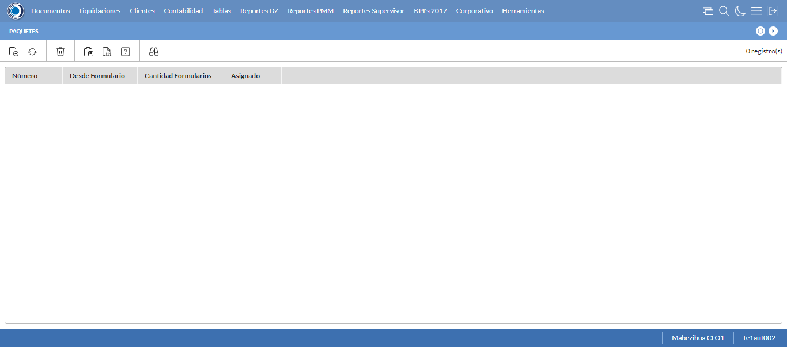
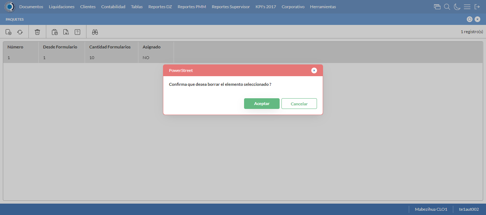
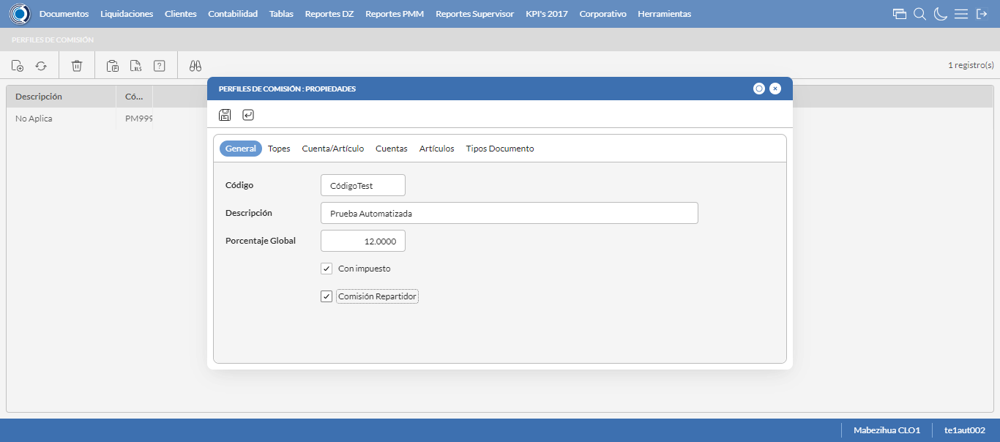
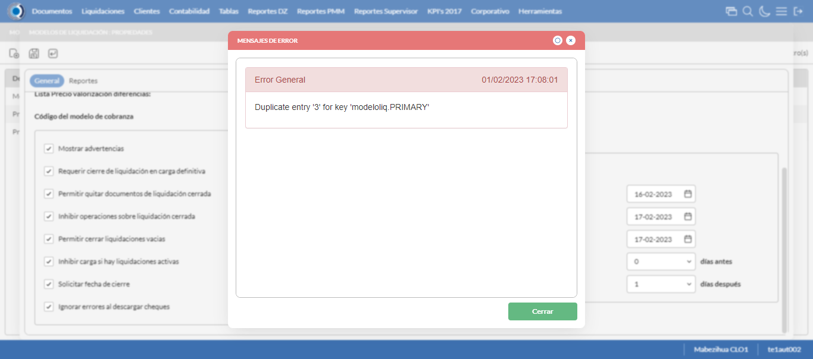
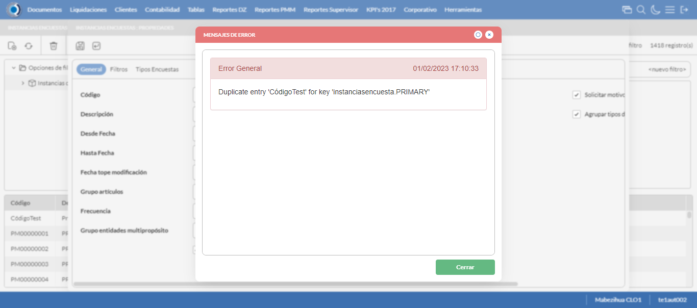
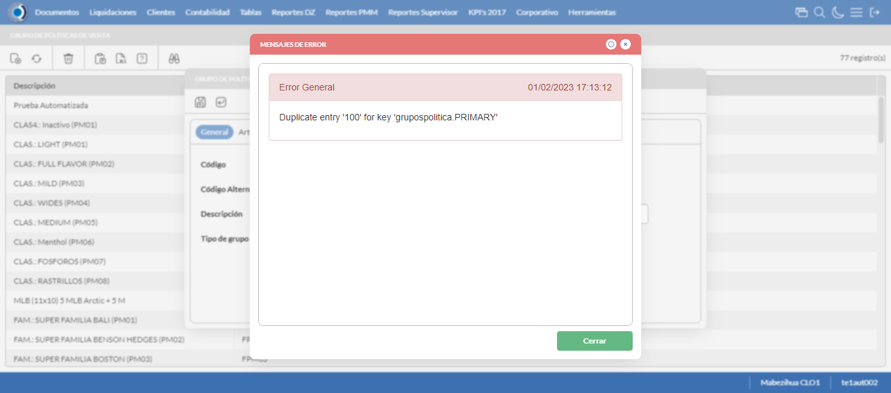

Desarrollado por : Area de Testing PWST
Fecha y hora de inicio : 2023-02-01 11:02:48
Duracion : 0:12:46.540127
Resultado : Total 127，Correctos 65 ，Errores 62 ，Taza de resultado 51.18%
Resumen 51.18% Errores 62 Fallidos 0 Correctos 65 Test realizados 127
| Caso de Prueba | Total | Correctos | Fallido | Error | Detalles | Captura del error |
| ScriptAmarillo.Test: Script Amarillo | 127 | 65 | 0 | 62 | Detalles | |
test |
ft1_1: 2023-02-01 11:02:50,065 - root - INFO - Se abre el chrome
2023-02-01 11:02:51,111 - root - INFO - Entra a la URL
2023-02-01 11:02:51,244 - root - INFO - Maximiza la pantalla
Traceback (most recent call last):
File "C:\Users\gerar\AppData\Local\Programs\Python\Python311\Lib\site-packages\selenium\webdriver\remote\switch_to.py", line 88, in frame
frame_reference = self._driver.find_element(By.ID, frame_reference)
^^^^^^^^^^^^^^^^^^^^^^^^^^^^^^^^^^^^^^^^^^^^^^^^^
File "C:\Users\gerar\AppData\Local\Programs\Python\Python311\Lib\site-packages\selenium\webdriver\remote\webdriver.py", line 861, in find_element
return self.execute(Command.FIND_ELEMENT, {"using": by, "value": value})["value"]
^^^^^^^^^^^^^^^^^^^^^^^^^^^^^^^^^^^^^^^^^^^^^^^^^^^^^^^^^^^^^^^^^
File "C:\Users\gerar\AppData\Local\Programs\Python\Python311\Lib\site-packages\selenium\webdriver\remote\webdriver.py", line 444, in execute
self.error_handler.check_response(response)
File "C:\Users\gerar\AppData\Local\Programs\Python\Python311\Lib\site-packages\selenium\webdriver\remote\errorhandler.py", line 249, in check_response
raise exception_class(message, screen, stacktrace)
selenium.common.exceptions.NoSuchElementException: Message: no such element: Unable to locate element: {"method":"css selector","selector":"[id="mainFrame"]"}
(Session info: chrome=109.0.5414.120)
Stacktrace:
Backtrace:
(No symbol) [0x0023F243]
(No symbol) [0x001C7FD1]
(No symbol) [0x000BD04D]
(No symbol) [0x000EC0B0]
(No symbol) [0x000EC22B]
(No symbol) [0x0011E612]
(No symbol) [0x001085D4]
(No symbol) [0x0011C9EB]
(No symbol) [0x00108386]
(No symbol) [0x000E163C]
(No symbol) [0x000E269D]
GetHandleVerifier [0x004D9A22+2655074]
GetHandleVerifier [0x004CCA24+2601828]
GetHandleVerifier [0x002E8C0A+619850]
GetHandleVerifier [0x002E7830+614768]
(No symbol) [0x001D05FC]
(No symbol) [0x001D5968]
(No symbol) [0x001D5A55]
(No symbol) [0x001E051B]
BaseThreadInitThunk [0x75C77D69+25]
RtlInitializeExceptionChain [0x7752BB9B+107]
RtlClearBits [0x7752BB1F+191]
(No symbol) [0x00000000]
During handling of the above exception, another exception occurred:
Traceback (most recent call last):
File "C:\Users\gerar\AppData\Local\Programs\Python\Python311\Lib\site-packages\selenium\webdriver\remote\switch_to.py", line 91, in frame
frame_reference = self._driver.find_element(By.NAME, frame_reference)
^^^^^^^^^^^^^^^^^^^^^^^^^^^^^^^^^^^^^^^^^^^^^^^^^^^
File "C:\Users\gerar\AppData\Local\Programs\Python\Python311\Lib\site-packages\selenium\webdriver\remote\webdriver.py", line 861, in find_element
return self.execute(Command.FIND_ELEMENT, {"using": by, "value": value})["value"]
^^^^^^^^^^^^^^^^^^^^^^^^^^^^^^^^^^^^^^^^^^^^^^^^^^^^^^^^^^^^^^^^^
File "C:\Users\gerar\AppData\Local\Programs\Python\Python311\Lib\site-packages\selenium\webdriver\remote\webdriver.py", line 444, in execute
self.error_handler.check_response(response)
File "C:\Users\gerar\AppData\Local\Programs\Python\Python311\Lib\site-packages\selenium\webdriver\remote\errorhandler.py", line 249, in check_response
raise exception_class(message, screen, stacktrace)
selenium.common.exceptions.NoSuchElementException: Message: no such element: Unable to locate element: {"method":"css selector","selector":"[name="mainFrame"]"}
(Session info: chrome=109.0.5414.120)
Stacktrace:
Backtrace:
(No symbol) [0x0023F243]
(No symbol) [0x001C7FD1]
(No symbol) [0x000BD04D]
(No symbol) [0x000EC0B0]
(No symbol) [0x000EC22B]
(No symbol) [0x0011E612]
(No symbol) [0x001085D4]
(No symbol) [0x0011C9EB]
(No symbol) [0x00108386]
(No symbol) [0x000E163C]
(No symbol) [0x000E269D]
GetHandleVerifier [0x004D9A22+2655074]
GetHandleVerifier [0x004CCA24+2601828]
GetHandleVerifier [0x002E8C0A+619850]
GetHandleVerifier [0x002E7830+614768]
(No symbol) [0x001D05FC]
(No symbol) [0x001D5968]
(No symbol) [0x001D5A55]
(No symbol) [0x001E051B]
BaseThreadInitThunk [0x75C77D69+25]
RtlInitializeExceptionChain [0x7752BB9B+107]
RtlClearBits [0x7752BB1F+191]
(No symbol) [0x00000000]
During handling of the above exception, another exception occurred:
Traceback (most recent call last):
File "C:\xampp\htdocs\versiones\automatizaciones\AutoPWST\ScriptAmarillo\testCase\ScriptAmarillo.py", line 307, in test
self.driver.switch_to.frame("mainFrame")
File "C:\Users\gerar\AppData\Local\Programs\Python\Python311\Lib\site-packages\selenium\webdriver\remote\switch_to.py", line 93, in frame
raise NoSuchFrameException(frame_reference)
selenium.common.exceptions.NoSuchFrameException: Message: mainFrame
|
|
||||
test_000: Ingresa a la base de datos |
pt1_2: 2023-02-01 11:02:54,327 - root - INFO - Escribe el usuario
2023-02-01 11:02:54,395 - root - INFO - Escribe la contraseña
2023-02-01 11:02:54,455 - root - INFO - Se dio clic en el boton ingresar
2023-02-01 11:02:55,652 - root - INFO - Ejecutar Enterprise
2023-02-01 11:02:59,690 - root - INFO - Cambia entre pestañas
|
|
||||
test_001: Ingresa a pantalla Objetivos Diarios |
pt1_3: 2023-02-01 11:03:03,637 - root - INFO - Abre la pantalla de Objetivos Diarios
2023-02-01 11:03:04,202 - root - INFO - La pantalla ejecutada es Lista de precios.
2023-02-01 11:03:04,202 - root - INFO - Captura: C:\xampp\htdocs\versiones\automatizaciones\AutoPWST\ScriptAmarillo\report\img screen：20230201_11_03_04.png
2023-02-01 11:03:04,385 - root - INFO - Se presiona el boton 'Refrescar', para crear un nuevo registro igual al anterior.
2023-02-01 11:03:14,721 - root - INFO - Se presiona el boton 'Nuevo', para crear un nuevo registro.
|

|
||||
test_002: Agregar Objetivos Diarios |
pt1_4: 2023-02-01 11:03:15,264 - root - INFO - Se abrio la pantalla para el ingreso de un registro nuevo.
2023-02-01 11:03:15,292 - root - INFO - El campo 'Vendedor' si se encuentra visible.
2023-02-01 11:03:15,320 - root - INFO - El campo 'Fecha' si se encuentra visible.
2023-02-01 11:03:15,349 - root - INFO - El campo 'Efectividad %' si se encuentra visible.
2023-02-01 11:03:16,305 - root - INFO - Ingresa la efectividad del nuevo registro
2023-02-01 11:03:18,308 - root - INFO - Captura: C:\xampp\htdocs\versiones\automatizaciones\AutoPWST\ScriptAmarillo\report\img screen：20230201_11_03_18.png
2023-02-01 11:03:18,436 - root - INFO - Se hace el cambio de pestaña para continuar con el registro nuevo
2023-02-01 11:03:19,024 - root - INFO - Se presiona el boton 'Nuevo', para crear un nuevo registro.
2023-02-01 11:03:19,588 - root - INFO - El campo 'Grupo Política' si se encuentra visible.
2023-02-01 11:03:19,628 - root - INFO - El campo 'Tipo Objetivo' si se encuentra visible.
2023-02-01 11:03:19,659 - root - INFO - El campo 'Tipo Unidad' si se encuentra visible.
2023-02-01 11:03:19,686 - root - INFO - El campo 'Objetivo Cantidad' si se encuentra visible.
2023-02-01 11:03:19,709 - root - INFO - El campo 'Objetivo Cobertura' si se encuentra visible.
2023-02-01 11:03:21,752 - root - INFO - Ingresa el Objetivo Cantidad del nuevo registro
2023-02-01 11:03:21,815 - root - INFO - Ingresa el Objetivo Cobertura del nuevo registro
2023-02-01 11:03:21,861 - root - INFO - Se da clic en el boton Guardar; se debe crear un nuevo registro.
2023-02-01 11:03:22,144 - root - INFO - Se da clic en el boton Guardar; se debe crear un nuevo registro.
|
|||||
test_003: Repetir Registro Objetivos Diarios |
pt1_5: 2023-02-01 11:03:22,451 - root - INFO - Se presiona el boton 'Refrescar', para crear un nuevo registro igual al anterior.
2023-02-01 11:03:22,632 - root - INFO - Se presiona el boton 'Nuevo', para crear un nuevo registro igual al anterior.
2023-02-01 11:03:23,170 - root - INFO - Se abrio la pantalla para el ingreso de un registro nuevo.
2023-02-01 11:03:23,197 - root - INFO - El campo 'Vendedor' si se encuentra visible.
2023-02-01 11:03:23,224 - root - INFO - El campo 'Fecha' si se encuentra visible.
2023-02-01 11:03:23,250 - root - INFO - El campo 'Efectividad %' si se encuentra visible.
2023-02-01 11:03:24,215 - root - INFO - Ingresa la efectividad del nuevo registro
2023-02-01 11:03:24,347 - root - INFO - Se da clic en el boton Guardar; se debe crear un nuevo registro.
2023-02-01 11:03:25,348 - root - INFO - Captura: C:\xampp\htdocs\versiones\automatizaciones\AutoPWST\ScriptAmarillo\report\img screen：20230201_11_03_25.png
2023-02-01 11:03:30,633 - root - INFO - Se presiona el boton 'Cerrar', para cerrar el mensaje de duplicidad de llave primaria
2023-02-01 11:03:31,634 - root - INFO - Captura: C:\xampp\htdocs\versiones\automatizaciones\AutoPWST\ScriptAmarillo\report\img screen：20230201_11_03_31.png
2023-02-01 11:03:31,805 - root - INFO - Se presiona el boton 'Cerrar', para cerrar el mensaje de duplicidad de llave primaria
2023-02-01 11:03:31,922 - root - INFO - Se presiona el boton 'Cerrar', para cerrar la ventana
|
|||||
test_004: Modifica Objetivos Diarios |
pt1_6: 2023-02-01 11:03:32,034 - root - INFO - Se presiona el boton 'Refrescar', para crear un nuevo registro igual al anterior.
2023-02-01 11:03:33,639 - root - INFO - Se da clic en el registro creado, para proceder a modificarlo.
2023-02-01 11:03:34,232 - root - INFO - Ingresa la efectividad del nuevo registro
2023-02-01 11:03:36,233 - root - INFO - Captura: C:\xampp\htdocs\versiones\automatizaciones\AutoPWST\ScriptAmarillo\report\img screen：20230201_11_03_36.png
2023-02-01 11:03:36,366 - root - INFO - Se hace el cambio de pestaña para continuar con el registro nuevo
2023-02-01 11:03:37,449 - root - INFO - Se da clic en el registro creado, para proceder a modificarlo.
2023-02-01 11:03:40,141 - root - INFO - Ingresa el Objetivo Cantidad del nuevo registro
2023-02-01 11:03:40,238 - root - INFO - Ingresa el Objetivo Cobertura del nuevo registro
2023-02-01 11:03:40,295 - root - INFO - Se da clic en el boton Guardar; se debe crear un nuevo registro.
2023-02-01 11:03:40,566 - root - INFO - Se da clic en el boton Guardar; se debe modificar la informacion del registro.
|
|||||
test_005: Elimina Objetivos Diarios |
pt1_7: 2023-02-01 11:03:40,805 - root - INFO - Se presiona el boton 'Refrescar', para proceder a eliminar el registro.
2023-02-01 11:03:42,373 - root - INFO - Se da clic en el registro creado, para proceder a eliminarlo.
2023-02-01 11:03:42,425 - root - INFO - Se presiona el boton 'Eliminar', para eliminar el registro.
2023-02-01 11:03:44,426 - root - INFO - Captura: C:\xampp\htdocs\versiones\automatizaciones\AutoPWST\ScriptAmarillo\report\img screen：20230201_11_03_44.png
2023-02-01 11:03:44,555 - root - INFO - Se confirma el eliminado del registro
2023-02-01 11:03:44,783 - root - INFO - Se presiona el boton 'Refrescar', para crear un nuevo registro igual al anterior.
2023-02-01 11:03:44,968 - root - INFO - Se presiona el boton 'Cerrar', para cerrar la pantalla de Categorias Fiscales.
|
|||||
test_006: Ingresa a pantalla Pop Ups |
pt1_8: 2023-02-01 11:03:45,869 - root - INFO - Abre la pantalla de PopUps
2023-02-01 11:03:46,925 - root - INFO - La pantalla ejecutada es PopUps.
2023-02-01 11:03:47,927 - root - INFO - Captura: C:\xampp\htdocs\versiones\automatizaciones\AutoPWST\ScriptAmarillo\report\img screen：20230201_11_03_47.png
2023-02-01 11:03:49,133 - root - INFO - Se ordenó por codigo.
2023-02-01 11:03:59,472 - root - INFO - Se presiona el boton 'Nuevo', para crear un nuevo registro.
|

|
||||
test_007: Agregar Pop Ups |
pt1_9: 2023-02-01 11:04:00,037 - root - INFO - Se abrio la pantalla para el ingreso de un registro nuevo.
2023-02-01 11:04:00,079 - root - INFO - El campo 'Codigo' si se encuentra visible.
2023-02-01 11:04:00,108 - root - INFO - El campo 'Orden' si se encuentra visible.
2023-02-01 11:04:00,136 - root - INFO - El campo 'Activo' si se encuentra visible.
2023-02-01 11:04:00,164 - root - INFO - El campo 'Descrición' si se encuentra visible.
2023-02-01 11:04:00,193 - root - INFO - El campo 'Modo Visualización' si se encuentra visible.
2023-02-01 11:04:00,222 - root - INFO - El campo 'Tipo Popup' si se encuentra visible.
2023-02-01 11:04:00,250 - root - INFO - El campo 'Fecha Desde' si se encuentra visible.
2023-02-01 11:04:00,279 - root - INFO - El campo 'Fecha Hasta' si se encuentra visible.
2023-02-01 11:04:00,306 - root - INFO - El campo 'Texto' si se encuentra visible.
2023-02-01 11:04:00,333 - root - INFO - El campo 'Seleccione Imagen' si se encuentra visible.
2023-02-01 11:04:00,379 - root - INFO - Ingresa el codigo del nuevo registro
2023-02-01 11:04:00,457 - root - INFO - Ingresa la orden del nuevo registro
2023-02-01 11:04:01,529 - root - INFO - Hizo click en el checkbox Activo
2023-02-01 11:04:01,679 - root - INFO - Ingresa la descripción del nuevo registro
2023-02-01 11:04:02,028 - root - INFO - Se dió click en la opción Pantalla Held.
2023-02-01 11:04:03,218 - root - INFO - Se dió doble click en el registro de Tipo Pop Up.
2023-02-01 11:04:03,462 - root - INFO - Ingresa el texto del nuevo registro
2023-02-01 11:04:04,465 - root - INFO - Captura: C:\xampp\htdocs\versiones\automatizaciones\AutoPWST\ScriptAmarillo\report\img screen：20230201_11_04_04.png
2023-02-01 11:04:04,608 - root - INFO - Se da clic en el boton Guardar; se debe crear un nuevo registro.
|
|||||
test_008: Repetir Registro Pop Ups |
pt1_10: 2023-02-01 11:04:04,975 - root - INFO - Se presiona el boton 'Refrescar', para crear un nuevo registro igual al anterior.
2023-02-01 11:04:05,602 - root - INFO - Se presiona el boton 'Nuevo', para crear un nuevo registro igual al anterior.
2023-02-01 11:04:06,151 - root - INFO - Se abrio la pantalla para el ingreso de un registro nuevo.
2023-02-01 11:04:06,179 - root - INFO - El campo 'Codigo' si se encuentra visible.
2023-02-01 11:04:06,207 - root - INFO - El campo 'Orden' si se encuentra visible.
2023-02-01 11:04:06,231 - root - INFO - El campo 'Activo' si se encuentra visible.
2023-02-01 11:04:06,257 - root - INFO - El campo 'Descrición' si se encuentra visible.
2023-02-01 11:04:06,286 - root - INFO - El campo 'Modo Visualización' si se encuentra visible.
2023-02-01 11:04:06,313 - root - INFO - El campo 'Tipo Popup' si se encuentra visible.
2023-02-01 11:04:06,340 - root - INFO - El campo 'Fecha Desde' si se encuentra visible.
2023-02-01 11:04:06,366 - root - INFO - El campo 'Fecha Hasta' si se encuentra visible.
2023-02-01 11:04:06,392 - root - INFO - El campo 'Texto' si se encuentra visible.
2023-02-01 11:04:06,418 - root - INFO - El campo 'Seleccione Imagen' si se encuentra visible.
2023-02-01 11:04:06,460 - root - INFO - Ingresa el codigo del nuevo registro
2023-02-01 11:04:06,522 - root - INFO - Ingresa la orden del nuevo registro
2023-02-01 11:04:07,602 - root - INFO - Hizo click en el checkbox Activo
2023-02-01 11:04:07,748 - root - INFO - Ingresa la descripción del nuevo registro
2023-02-01 11:04:08,099 - root - INFO - Se dió click en la opción Pantalla Hand Held.
2023-02-01 11:04:09,318 - root - INFO - Se dió doble click en el registro de Tipo PopUp.
2023-02-01 11:04:09,556 - root - INFO - Ingresa el texto del nuevo registro
2023-02-01 11:04:09,668 - root - INFO - Se da clic en el boton Guardar; NO se debe crear un nuevo registro.
2023-02-01 11:04:10,671 - root - INFO - Captura: C:\xampp\htdocs\versiones\automatizaciones\AutoPWST\ScriptAmarillo\report\img screen：20230201_11_04_10.png
2023-02-01 11:04:15,968 - root - INFO - Se presiona el boton 'Cerrar', para cerrar el mensaje de duplicidad de llave primaria
2023-02-01 11:04:16,969 - root - INFO - Captura: C:\xampp\htdocs\versiones\automatizaciones\AutoPWST\ScriptAmarillo\report\img screen：20230201_11_04_16.png
2023-02-01 11:04:17,131 - root - INFO - Se presiona el boton 'Cerrar', para cerrar el mensaje de duplicidad de llave primaria
2023-02-01 11:04:17,261 - root - INFO - Se presiona el boton 'Cerrar', para cerrar la ventana
|
|||||
test_009: Modifica Pop Ups |
pt1_11: 2023-02-01 11:04:17,374 - root - INFO - Se presiona el boton 'Refrescar', para proceder a modificar el registro.
2023-02-01 11:04:19,032 - root - INFO - Se dió dos veces click en el encabezado para modificar el orden de los registros.
2023-02-01 11:04:21,150 - root - INFO - Se da clic en el registro creado, para proceder a modificarlo.
2023-02-01 11:04:21,801 - root - INFO - Se modifica el contenido del campo Orden
2023-02-01 11:04:22,890 - root - INFO - Hizo click en el checkbox activo
2023-02-01 11:04:23,084 - root - INFO - Se modifica el contenido del campo Descripción
2023-02-01 11:04:23,426 - root - INFO - Se dió click en la opción Ambos.
2023-02-01 11:04:24,632 - root - INFO - Se dió doble click en el registro de Tipo PopUp.
2023-02-01 11:04:24,915 - root - INFO - Se modifica el contenido del campo Texto
2023-02-01 11:04:25,916 - root - INFO - Captura: C:\xampp\htdocs\versiones\automatizaciones\AutoPWST\ScriptAmarillo\report\img screen：20230201_11_04_25.png
2023-02-01 11:04:26,075 - root - INFO - Se da clic en el boton Guardar; se debe modificar la informacion del registro.
|
|||||
test_010: Elimina PopUps |
pt1_12: 2023-02-01 11:04:26,381 - root - INFO - Se presiona el boton 'Refrescar', para proceder a eliminar el registro.
2023-02-01 11:04:27,974 - root - INFO - Se da clic en el registro creado, para proceder a eliminarlo.
2023-02-01 11:04:29,041 - root - INFO - Se presiona el boton 'Eliminar', para eliminar el registro.
2023-02-01 11:04:29,042 - root - INFO - Captura: C:\xampp\htdocs\versiones\automatizaciones\AutoPWST\ScriptAmarillo\report\img screen：20230201_11_04_29.png
2023-02-01 11:04:29,173 - root - INFO - Se confirma el eliminado del registro
2023-02-01 11:04:29,801 - root - INFO - Se presiona el boton 'Refrescar', para veriicar si el registro ha sido eliminado.
2023-02-01 11:04:30,387 - root - INFO - Se presiona el boton 'Cerrar', para cerrar la pantalla de Pop Ups.
|
|||||
test_011: Ingresa a pantalla Paquetes Formulario |
pt1_13: 2023-02-01 11:04:31,261 - root - INFO - Abre la pantalla de Paquetes de Formularios
2023-02-01 11:04:31,808 - root - INFO - Captura: C:\xampp\htdocs\versiones\automatizaciones\AutoPWST\ScriptAmarillo\report\img screen：20230201_11_04_31.png
2023-02-01 11:04:31,876 - root - INFO - La pantalla ejecutada es Zonas de Ventas.
2023-02-01 11:04:42,176 - root - INFO - Se presiona el boton 'Nuevo', para crear un nuevo registro.
|
 | ||||
test_012: Agregar Paquetes Formulario |
pt1_14: 2023-02-01 11:04:43,234 - root - INFO - Se abrio la pantalla para el ingreso de un registro nuevo.
2023-02-01 11:04:43,263 - root - INFO - El campo 'Número Paquete' si se encuentra visible.
2023-02-01 11:04:43,290 - root - INFO - El campo 'Formulario Inicial' si se encuentra visible.
2023-02-01 11:04:43,318 - root - INFO - El campo 'Cantidad Formularios' si se encuentra visible.
2023-02-01 11:04:44,358 - root - INFO - Captura: C:\xampp\htdocs\versiones\automatizaciones\AutoPWST\ScriptAmarillo\report\img screen：20230201_11_04_44.png
2023-02-01 11:04:44,438 - root - INFO - Ingresa la cantidad de formularios del nuevo registro
2023-02-01 11:04:44,485 - root - INFO - Se da clic en el boton Guardar; se debe crear un nuevo registro.
|

|
||||
test_013: Modifica Paquetes Formulario |
pt1_15: 2023-02-01 11:04:44,791 - root - INFO - Se presiona el boton 'Refrescar', para crear un nuevo registro igual al anterior.
2023-02-01 11:04:46,893 - root - INFO - Se da clic en el registro creado, para proceder a modificarlo.
2023-02-01 11:04:47,894 - root - INFO - Captura: C:\xampp\htdocs\versiones\automatizaciones\AutoPWST\ScriptAmarillo\report\img screen：20230201_11_04_47.png
2023-02-01 11:04:48,032 - root - INFO - Se presiona el boton 'Cerrar', para cerrar la ventana
|

|
||||
test_014: Elimina Paquetes Formulario |
pt1_16: 2023-02-01 11:04:48,158 - root - INFO - Se presiona el boton 'Refrescar', para proceder a eliminar el registro.
2023-02-01 11:04:49,741 - root - INFO - Se da clic en el registro creado, para proceder a eliminarlo.
2023-02-01 11:04:49,789 - root - INFO - Se presiona el boton 'Eliminar', para eliminar el registro.
2023-02-01 11:04:50,790 - root - INFO - Captura: C:\xampp\htdocs\versiones\automatizaciones\AutoPWST\ScriptAmarillo\report\img screen：20230201_11_04_50.png
2023-02-01 11:04:50,922 - root - INFO - Se confirma el eliminado del registro
2023-02-01 11:04:51,081 - root - INFO - Se presiona el boton 'Refrescar', para crear un nuevo registro igual al anterior.
2023-02-01 11:04:51,210 - root - INFO - Se presiona el boton 'Cerrar', para cerrar la pantalla de Categorias Fiscales.
|
 | ||||
test_015: Ingresa a pantalla Perfiles Comision |
pt1_17: 2023-02-01 11:04:52,105 - root - INFO - Abre la pantalla de Perfiles de Comisión
2023-02-01 11:04:52,647 - root - INFO - La pantalla ejecutada es Perfiles de Comisión.
2023-02-01 11:04:52,648 - root - INFO - Captura: C:\xampp\htdocs\versiones\automatizaciones\AutoPWST\ScriptAmarillo\report\img screen：20230201_11_04_52.png
2023-02-01 11:05:03,020 - root - INFO - Se presiona el boton 'Nuevo', para crear un nuevo registro.
|

|
||||
test_016: Agregar Perfiles Comision |
pt1_18: 2023-02-01 11:05:03,554 - root - INFO - Se abrio la pantalla para el ingreso de un registro nuevo.
2023-02-01 11:05:03,581 - root - INFO - El campo 'Codigo' si se encuentra visible.
2023-02-01 11:05:03,610 - root - INFO - El campo 'Descrición' si se encuentra visible.
2023-02-01 11:05:03,638 - root - INFO - El campo 'Porcentaje Global' si se encuentra visible.
2023-02-01 11:05:03,664 - root - INFO - El campo 'Con impuesto' si se encuentra visible.
2023-02-01 11:05:03,700 - root - INFO - El campo 'Comisión Repartidor' si se encuentra visible.
2023-02-01 11:05:03,755 - root - INFO - Ingresa el codigo del nuevo registro
2023-02-01 11:05:03,848 - root - INFO - Ingresa la descripción del nuevo registro
2023-02-01 11:05:03,909 - root - INFO - Ingresa el Porcentaje Global del nuevo registro
2023-02-01 11:05:03,966 - root - INFO - Se hizó click en el Checkbox Con impuesto
2023-02-01 11:05:04,019 - root - INFO - Se hizó click en el checkbox Comisión Repartidor
2023-02-01 11:05:05,020 - root - INFO - Captura: C:\xampp\htdocs\versiones\automatizaciones\AutoPWST\ScriptAmarillo\report\img screen：20230201_11_05_05.png
2023-02-01 11:05:05,150 - root - INFO - Se hace el cambio a la pestaña Topes para continuar con el registro nuevo
2023-02-01 11:05:05,717 - root - INFO - Se presiona el boton 'Nuevo', para crear un nuevo registro de Topes.
2023-02-01 11:05:06,272 - root - INFO - El campo 'Moneda' si se encuentra visible.
2023-02-01 11:05:06,302 - root - INFO - El campo 'Tope' si se encuentra visible.
2023-02-01 11:05:06,329 - root - INFO - El campo 'Porcentaje' si se encuentra visible.
2023-02-01 11:05:07,241 - root - INFO - Se dió doble click en el registro de Moneda.
2023-02-01 11:05:07,390 - root - INFO - Ingresa el tope del nuevo registro
2023-02-01 11:05:07,490 - root - INFO - Ingresa el Porcentaje del nuevo registro
2023-02-01 11:05:07,540 - root - INFO - Se da clic en el boton Guardar; se debe crear un nuevo registro de Topes.
2023-02-01 11:05:07,820 - root - INFO - Se hace el cambio a la pestaña Cuenta Articulo para continuar con el registro nuevo
2023-02-01 11:05:08,400 - root - INFO - Se presiona el boton 'Nuevo', para crear un nuevo registro de Cuenta Articulo.
2023-02-01 11:05:08,945 - root - INFO - El campo 'Cuenta' si se encuentra visible.
2023-02-01 11:05:08,984 - root - INFO - El campo 'Artículo' si se encuentra visible.
2023-02-01 11:05:09,015 - root - INFO - El campo 'Porcentaje' si se encuentra visible.
2023-02-01 11:05:10,450 - root - INFO - Se dió doble click en el registro de Cuenta.
2023-02-01 11:05:12,054 - root - INFO - Se dió doble click en el registro de Articulo.
2023-02-01 11:05:12,170 - root - INFO - Ingresa el Porcentaje del nuevo registro
2023-02-01 11:05:12,282 - root - INFO - Se da clic en el boton Guardar; se debe crear un nuevo registro de Cuenta Articulo.
2023-02-01 11:05:12,535 - root - INFO - Se hace el cambio a la pestaña Cuentas para continuar con el registro nuevo
2023-02-01 11:05:13,105 - root - INFO - Se presiona el boton 'Nuevo', para crear un nuevo registro de Cuentas.
2023-02-01 11:05:13,649 - root - INFO - El campo 'Cuenta' si se encuentra visible.
2023-02-01 11:05:13,675 - root - INFO - El campo 'Porcentaje' si se encuentra visible.
2023-02-01 11:05:15,184 - root - INFO - Se dió doble click en el registro de Cuenta.
2023-02-01 11:05:15,301 - root - INFO - Ingresa el Porcentaje del nuevo registro
2023-02-01 11:05:15,356 - root - INFO - Se da clic en el boton Guardar; se debe crear un nuevo registro de Cuentas.
2023-02-01 11:05:15,624 - root - INFO - Se hace el cambio a la pestaña Articulos para continuar con el registro nuevo
2023-02-01 11:05:16,191 - root - INFO - Se presiona el boton 'Nuevo', para crear un nuevo registro de Articulos.
2023-02-01 11:05:16,736 - root - INFO - El campo 'Artículo' si se encuentra visible.
2023-02-01 11:05:16,762 - root - INFO - El campo 'Porcentaje' si se encuentra visible.
2023-02-01 11:05:18,166 - root - INFO - Se dió doble click en el registro de Articulo.
2023-02-01 11:05:18,284 - root - INFO - Ingresa el Porcentaje del nuevo registro
2023-02-01 11:05:18,417 - root - INFO - Se da clic en el boton Guardar; se debe crear un nuevo registro de Articulos.
2023-02-01 11:05:18,684 - root - INFO - Se hace el cambio a la pestaña Tipos de Documento para continuar con el registro nuevo
2023-02-01 11:05:19,260 - root - INFO - Se presiona el boton 'Nuevo', para crear un nuevo registro de Tipo Documento.
2023-02-01 11:05:19,805 - root - INFO - El campo 'Tipo Documento' si se encuentra visible.
2023-02-01 11:05:19,835 - root - INFO - El campo 'Origen' si se encuentra visible.
2023-02-01 11:05:19,865 - root - INFO - El campo 'Signo' si se encuentra visible.
2023-02-01 11:05:19,893 - root - INFO - El campo 'Cancelado' si se encuentra visible.
2023-02-01 11:05:20,787 - root - INFO - Se dió doble click en el registro de Tipo Documento.
2023-02-01 11:05:23,158 - root - INFO - Se dió click en la opción Backoffice.
2023-02-01 11:05:23,508 - root - INFO - Se dió click en la opción Suma.
2023-02-01 11:05:23,572 - root - INFO - Se dió click en el checkbox Cancelado.
2023-02-01 11:05:23,625 - root - INFO - Se da clic en el boton Guardar; se debe crear un nuevo registro de Tipos Documento.
2023-02-01 11:05:23,889 - root - INFO - Se da clic en el boton Guardar; se debe crear un nuevo registro.
|
 | ||||
test_017: Repetir Registro Perfiles Comision |
pt1_19: 2023-02-01 11:05:24,209 - root - INFO - Se presiona el boton 'Refrescar', para crear un nuevo registro igual al anterior.
2023-02-01 11:05:24,392 - root - INFO - Se presiona el boton 'Nuevo', para crear un nuevo registro igual al anterior.
2023-02-01 11:05:24,940 - root - INFO - Se abrio la pantalla para el ingreso de un registro nuevo.
2023-02-01 11:05:24,969 - root - INFO - El campo 'Codigo' si se encuentra visible.
2023-02-01 11:05:24,998 - root - INFO - El campo 'Descrición' si se encuentra visible.
2023-02-01 11:05:25,025 - root - INFO - El campo 'Porcentaje Global' si se encuentra visible.
2023-02-01 11:05:25,055 - root - INFO - El campo 'Con impuesto' si se encuentra visible.
2023-02-01 11:05:25,083 - root - INFO - El campo 'Comisión Repartidor' si se encuentra visible.
2023-02-01 11:05:25,132 - root - INFO - Ingresa el codigo del nuevo registro
2023-02-01 11:05:25,210 - root - INFO - Ingresa la descripción del nuevo registro
2023-02-01 11:05:25,271 - root - INFO - Ingresa el Porcentaje Global del nuevo registro
2023-02-01 11:05:25,319 - root - INFO - Se hizó click en el Checkbox Con impuesto
2023-02-01 11:05:25,366 - root - INFO - Se hizó click en el checkbox Comisión Repartidor
2023-02-01 11:05:25,405 - root - INFO - Se da clic en el boton Guardar; No se debe crear un nuevo registro.
2023-02-01 11:05:26,406 - root - INFO - Captura: C:\xampp\htdocs\versiones\automatizaciones\AutoPWST\ScriptAmarillo\report\img screen：20230201_11_05_26.png
2023-02-01 11:05:31,684 - root - INFO - Se presiona el boton 'Cerrar', para cerrar el mensaje de duplicidad de llave primaria
2023-02-01 11:05:32,687 - root - INFO - Captura: C:\xampp\htdocs\versiones\automatizaciones\AutoPWST\ScriptAmarillo\report\img screen：20230201_11_05_32.png
2023-02-01 11:05:32,828 - root - INFO - Se presiona el boton 'Cerrar', para cerrar el mensaje de duplicidad de llave primaria
2023-02-01 11:05:32,940 - root - INFO - Se presiona el boton 'Cerrar', para cerrar la ventana
|
|||||
test_018: Modifica Perfiles Comision |
pt1_20: 2023-02-01 11:05:33,050 - root - INFO - Se presiona el boton 'Refrescar', para proceder a modificar el registro.
2023-02-01 11:05:34,645 - root - INFO - Se da doble click en el registro creado, para proceder a modificarlo.
2023-02-01 11:05:35,269 - root - INFO - Se modifica el contenido del campo Descripción
2023-02-01 11:05:35,349 - root - INFO - Se modifica el contenido del campo Porcentaje Global
2023-02-01 11:05:35,396 - root - INFO - Se hizó click en el checkbox Con impuesto
2023-02-01 11:05:35,442 - root - INFO - Se hizó click en el checkbox Comisión Repartidor
2023-02-01 11:05:37,444 - root - INFO - Captura: C:\xampp\htdocs\versiones\automatizaciones\AutoPWST\ScriptAmarillo\report\img screen：20230201_11_05_37.png
2023-02-01 11:05:37,564 - root - INFO - Se da clic en el boton Guardar; se debe modificar la informacion del registro.
|

|
||||
test_019: Elimina Perfiles Comision |
pt1_21: 2023-02-01 11:05:37,933 - root - INFO - Se presiona el boton 'Refrescar', para proceder a eliminar el registro.
2023-02-01 11:05:39,523 - root - INFO - Se da clic en el registro creado, para proceder a eliminarlo.
2023-02-01 11:05:40,593 - root - INFO - Se da clic en la ventana de tope, para proceder a eliminarlo.
2023-02-01 11:05:41,667 - root - INFO - Se da clic en el tope creado, para proceder a eliminarlo.
2023-02-01 11:05:42,304 - root - INFO - Se da clic en la ventana cuenta/articulo, para proceder a eliminarlo.
2023-02-01 11:05:43,367 - root - INFO - Se da clic en la cuenta/articulo creado, para proceder a eliminarlo.
2023-02-01 11:05:44,022 - root - INFO - Se da clic en la ventana cuentas, para proceder a eliminarlo.
2023-02-01 11:05:45,090 - root - INFO - Se da clic en la cuenta creado, para proceder a eliminarlo.
2023-02-01 11:05:45,705 - root - INFO - Se da clic en la cuenta/articulo creado, para proceder a eliminarlo.
2023-02-01 11:05:46,760 - root - INFO - Se da clic en el articulo creado, para proceder a eliminarlo.
2023-02-01 11:05:47,376 - root - INFO - Se da clic en la ventana tipo documento, para proceder a eliminarlo.
2023-02-01 11:05:48,441 - root - INFO - Se da clic en el tipo de documento creado, para proceder a eliminarlo.
2023-02-01 11:05:48,622 - root - INFO - Se da clic en el boton Guardar; se debe crear un nuevo registro.
2023-02-01 11:05:49,191 - root - INFO - Se da clic en el registro creado, para proceder a eliminarlo.
2023-02-01 11:05:49,234 - root - INFO - Se presiona el boton 'Eliminar', para eliminar el registro.
2023-02-01 11:05:49,235 - root - INFO - Captura: C:\xampp\htdocs\versiones\automatizaciones\AutoPWST\ScriptAmarillo\report\img screen：20230201_11_05_49.png
2023-02-01 11:05:49,374 - root - INFO - Se confirma el eliminado del registro
2023-02-01 11:05:49,537 - root - INFO - Se presiona el boton 'Refrescar', para verificar que el registro se ha eliminado.
2023-02-01 11:05:49,728 - root - INFO - Se presiona el boton 'Cerrar', para cerrar la pantalla de Perfiles de Comisión.
|
|||||
test_020: Ingresa a pantalla Politicas de Venta |
pt1_22: 2023-02-01 11:05:50,595 - root - INFO - Abre la pantalla de Politicas de Venta
2023-02-01 11:05:51,637 - root - INFO - La pantalla ejecutada es Politicas de Venta
2023-02-01 11:05:52,638 - root - INFO - Captura: C:\xampp\htdocs\versiones\automatizaciones\AutoPWST\ScriptAmarillo\report\img screen：20230201_11_05_52.png
2023-02-01 11:06:02,899 - root - INFO - Se presiona el boton 'Nuevo', para crear un nuevo registro.
|
|||||
test_021: Agregar Perfiles Politicas de Venta |
pt1_23: 2023-02-01 11:06:03,437 - root - INFO - Se abrio la pantalla para el ingreso de un registro nuevo.
2023-02-01 11:06:03,463 - root - INFO - El campo 'Codigo' si se encuentra visible.
2023-02-01 11:06:03,488 - root - INFO - El campo 'Codigo Alternativo' si se encuentra visible.
2023-02-01 11:06:03,515 - root - INFO - El campo 'Descrición' si se encuentra visible.
2023-02-01 11:06:03,543 - root - INFO - El campo 'Moneda' si se encuentra visible.
2023-02-01 11:06:03,602 - root - INFO - El campo 'Aplicable en' si se encuentra visible.
2023-02-01 11:06:03,631 - root - INFO - El campo 'Activa' si se encuentra visible.
2023-02-01 11:06:03,682 - root - INFO - El campo 'Aplicación Global' si se encuentra visible.
2023-02-01 11:06:03,731 - root - INFO - Ingresa el codigo del nuevo registro
2023-02-01 11:06:03,800 - root - INFO - Ingresa el codigo alternativo del nuevo registro
2023-02-01 11:06:03,942 - root - INFO - Ingresa la descripción del nuevo registro
2023-02-01 11:06:04,839 - root - INFO - Se dió doble click en el registro de Moneda.
2023-02-01 11:06:05,363 - root - INFO - Se dió click en la opción BackOffice y Mobile.
2023-02-01 11:06:06,416 - root - INFO - Se dió click en el checkbox Activa.
2023-02-01 11:06:06,470 - root - INFO - Se dió click en el checkbox Aplicación Global.
2023-02-01 11:06:06,517 - root - INFO - Se hace el cambio a la pestaña Por Articulo para continuar con el registro nuevo
2023-02-01 11:06:07,126 - root - INFO - Se presiona el boton 'Nuevo', para crear un nuevo registro de Por Articulo.
2023-02-01 11:06:07,663 - root - INFO - El campo 'Artículo' si se encuentra visible.
2023-02-01 11:06:07,740 - root - INFO - El campo 'Artículo a Bonificar' si se encuentra visible.
2023-02-01 11:06:07,768 - root - INFO - El campo 'Cantidad a Bonificar(Packing)' si se encuentra visible.
2023-02-01 11:06:07,795 - root - INFO - El campo 'Cantidad en Bonificación(Unidad)' si se encuentra visible.
2023-02-01 11:06:07,823 - root - INFO - El campo 'Tope Descuento 1' si se encuentra visible.
2023-02-01 11:06:07,851 - root - INFO - El campo 'Tope Descuento 2' si se encuentra visible.
2023-02-01 11:06:07,940 - root - INFO - Ingresa el Articulo del nuevo registro
2023-02-01 11:06:08,034 - root - INFO - Ingresa el Articulo a bonificar del nuevo registro
2023-02-01 11:06:08,123 - root - INFO - Ingresa la Cantidad a Bonificar del nuevo registro
2023-02-01 11:06:08,214 - root - INFO - Ingresa la Cantidad en Bonificación del nuevo registro
2023-02-01 11:06:08,320 - root - INFO - Ingresa el Tope Descuento 1 del nuevo registro
2023-02-01 11:06:08,469 - root - INFO - Ingresa el Tope Descuento 2 del nuevo registro
2023-02-01 11:06:09,471 - root - INFO - Captura: C:\xampp\htdocs\versiones\automatizaciones\AutoPWST\ScriptAmarillo\report\img screen：20230201_11_06_09.png
2023-02-01 11:06:09,670 - root - INFO - Se presiona el boton 'Guardar', para guardar el registro de Por Articulo.
2023-02-01 11:06:09,958 - root - INFO - Se da clic en el boton Guardar; se debe crear un nuevo registro.
|
|||||
test_022: Repetir Registro Politicas de Venta |
pt1_24: 2023-02-01 11:06:11,015 - root - INFO - Se presiona el boton 'Refrescar', para crear un nuevo registro igual al anterior.
2023-02-01 11:06:11,191 - root - INFO - Se presiona el boton 'Nuevo', para crear un nuevo registro igual al anterior.
2023-02-01 11:06:11,720 - root - INFO - Se abrio la pantalla para el ingreso de un registro nuevo.
2023-02-01 11:06:11,792 - root - INFO - Ingresa el codigo del nuevo registro
2023-02-01 11:06:11,896 - root - INFO - Ingresa el codigo alternativo del nuevo registro
2023-02-01 11:06:12,026 - root - INFO - Ingresa la descripción del nuevo registro
2023-02-01 11:06:12,914 - root - INFO - Se dió doble click en el registro de Moneda.
2023-02-01 11:06:13,447 - root - INFO - Se dió click en la opción BackOffice y Mobile.
2023-02-01 11:06:13,495 - root - INFO - Se dió click en el checkbox Activa.
2023-02-01 11:06:13,541 - root - INFO - Se dió click en el checkbox Aplicación Global.
2023-02-01 11:06:13,592 - root - INFO - Se da clic en el boton Guardar; No se debe crear un nuevo registro.
2023-02-01 11:06:14,593 - root - INFO - Captura: C:\xampp\htdocs\versiones\automatizaciones\AutoPWST\ScriptAmarillo\report\img screen：20230201_11_06_14.png
2023-02-01 11:06:19,828 - root - INFO - Se presiona el boton 'Cerrar', para cerrar el mensaje de duplicidad de llave primaria
2023-02-01 11:06:20,829 - root - INFO - Captura: C:\xampp\htdocs\versiones\automatizaciones\AutoPWST\ScriptAmarillo\report\img screen：20230201_11_06_20.png
2023-02-01 11:06:20,978 - root - INFO - Se presiona el boton 'Cerrar', para cerrar el mensaje de duplicidad de llave primaria
2023-02-01 11:06:21,102 - root - INFO - Se presiona el boton 'Cerrar', para cerrar la ventana
|
|||||
test_023: Modifica Politicas de Venta |
ft1_25: 2023-02-01 11:06:21,222 - root - INFO - Se presiona el boton 'Refrescar', para proceder a modificar el registro.
2023-02-01 11:07:21,523 - root - ERROR - No se encontró el registro deseado, validar que la acción anterior haya finalizado, que el xpath sea el correcto o que la página no presente lentitud
2023-02-01 11:07:22,524 - root - INFO - Captura: C:\xampp\htdocs\versiones\automatizaciones\AutoPWST\ScriptAmarillo\report\img screen：20230201_11_07_22.png
2023-02-01 11:07:38,241 - root - INFO - Se presiona el boton 'Cerrar', para cerrar la pantalla.
Traceback (most recent call last):
File "C:\xampp\htdocs\versiones\automatizaciones\AutoPWST\ScriptAmarillo\testCase\ScriptAmarillo.py", line 1312, in test_023
raise Exception()
Exception
|
|||||
test_024: Elimina Politicas de Venta |
ft1_26: 2023-02-01 11:07:38,243 - root - ERROR - La pantalla anterior fallo por lo que esta no funcionara, para mas detalles del error consulte el reporte
Traceback (most recent call last):
File "C:\xampp\htdocs\versiones\automatizaciones\AutoPWST\ScriptAmarillo\testCase\ScriptAmarillo.py", line 1362, in test_024
raise Exception()
Exception
|
|
||||
test_025: Ingresa a pantalla Modelos de Liquidacion |
pt1_27: 2023-02-01 11:07:39,173 - root - INFO - Abre la pantalla de Modelos Liquidación
2023-02-01 11:07:39,726 - root - INFO - La pantalla ejecutada es Modelos Liquidacion.
2023-02-01 11:07:41,727 - root - INFO - Captura: C:\xampp\htdocs\versiones\automatizaciones\AutoPWST\ScriptAmarillo\report\img screen：20230201_11_07_41.png
2023-02-01 11:07:41,864 - root - INFO - Se presiona el boton 'Nuevo', para crear un nuevo registro.
|

|
||||
test_026: Agregar Perfiles Modelos de Liquidacion |
pt1_28: 2023-02-01 11:07:42,396 - root - INFO - Se abrio la pantalla para el ingreso de un registro nuevo.
2023-02-01 11:07:42,425 - root - INFO - El campo 'Codigo' si se encuentra visible.
2023-02-01 11:07:42,475 - root - INFO - El campo 'Descrición' si se encuentra visible.
2023-02-01 11:07:42,507 - root - INFO - El campo 'Cantidad de días para generación de nueva liquidación' si se encuentra visible.
2023-02-01 11:07:42,537 - root - INFO - El campo 'Cantidad máxima de liquidaciones activas por vendedor' si se encuentra visible.
2023-02-01 11:07:42,592 - root - INFO - El campo 'Lista Precio valorización diferencias' por dif. tipo cambio' si se encuentra visible.
2023-02-01 11:07:42,621 - root - INFO - El campo 'Código del modelo de cobranza' si se encuentra visible.
2023-02-01 11:07:42,648 - root - INFO - El campo 'Mostrar advertencias' si se encuentra visible.
2023-02-01 11:07:42,675 - root - INFO - El campo 'Requerir cierre de liquidación en carga definitiva' si se encuentra visible.
2023-02-01 11:07:42,707 - root - INFO - El campo 'Permitir quitar documentos de liquidación cerrada' si se encuentra visible.
2023-02-01 11:07:42,737 - root - INFO - El campo 'Inhibir operaciones sobre liquidación cerrada' si se encuentra visible.
2023-02-01 11:07:42,762 - root - INFO - El campo 'Permitir cerrar liquidaciones vacias' si se encuentra visible.
2023-02-01 11:07:42,790 - root - INFO - El campo 'Inhibir carga si hay liquidaciones activas' si se encuentra visible.
2023-02-01 11:07:42,817 - root - INFO - El campo 'Solicitar fecha de cierre' si se encuentra visible.
2023-02-01 11:07:42,851 - root - INFO - El campo 'Ignorar errores al descargar cheques' si se encuentra visible.
2023-02-01 11:07:42,886 - root - INFO - El campo 'Desde Fecha' si se encuentra visible.
2023-02-01 11:07:42,914 - root - INFO - El campo 'Hasta Fecha' si se encuentra visible.
2023-02-01 11:07:42,943 - root - INFO - El campo 'Fecha vigencia precios' si se encuentra visible.
2023-02-01 11:07:42,997 - root - INFO - El campo 'Carga precios y políticas' si se encuentra visible.
2023-02-01 11:07:43,025 - root - INFO - El campo 'hasta' si se encuentra visible.
2023-02-01 11:07:43,067 - root - INFO - Ingresa el codigo del nuevo registro
2023-02-01 11:07:43,303 - root - INFO - Ingresa la descripción del nuevo registro
2023-02-01 11:07:43,385 - root - INFO - Ingresa la cantidad de días del nuevo registro
2023-02-01 11:07:43,468 - root - INFO - Ingresa la cantidad maxima del nuevo registro
2023-02-01 11:07:44,353 - root - INFO - Se dió doble click en el registro de Lista Precio.
2023-02-01 11:07:45,405 - root - INFO - Se dió doble click en el registro de Codigo Modelo.
2023-02-01 11:07:45,929 - root - INFO - Se movió la pantalla hacia abajo.
2023-02-01 11:07:46,996 - root - INFO - Se dió click en el checkbox Mostrar Advertencias.
2023-02-01 11:07:47,047 - root - INFO - Se dió click en el checkbox Cierre Liquidacion Carga Definitiva.
2023-02-01 11:07:47,097 - root - INFO - Se dió click en el checkbox Quitar Documentos.
2023-02-01 11:07:47,140 - root - INFO - Se dió click en el checkbox Inhibir Operaciones.
2023-02-01 11:07:47,188 - root - INFO - Se dió click en el checkbox Cerrar Liquidaciones Vacias.
2023-02-01 11:07:47,235 - root - INFO - Se dió click en el checkbox Inhibir Carga.
2023-02-01 11:07:47,285 - root - INFO - Se dió click en el checkbox Solicitar Fecha Cierre.
2023-02-01 11:07:47,330 - root - INFO - Se dió click en el checkbox Ignorar Errores.
2023-02-01 11:07:47,686 - root - INFO - Se dió click en el botón Hoy para seleccionar la fecha Actual.
2023-02-01 11:07:48,049 - root - INFO - Se dió click en el botón Hoy para seleccionar la fecha Actual.
2023-02-01 11:07:48,441 - root - INFO - Se dió click en el botón Hoy para seleccionar la fecha Actual.
2023-02-01 11:07:48,800 - root - INFO - Se dió click en la opción de Carga precios y politcas.
2023-02-01 11:07:50,802 - root - INFO - Captura: C:\xampp\htdocs\versiones\automatizaciones\AutoPWST\ScriptAmarillo\report\img screen：20230201_11_07_50.png
2023-02-01 11:07:50,942 - root - INFO - Se da clic en el boton Guardar; se debe crear un nuevo registro.
|

|
||||
test_027: Repetir Registro Modelos de Liquidacion |
pt1_29: 2023-02-01 11:07:51,196 - root - INFO - Se presiona el boton 'Refrescar', para crear un nuevo registro igual al anterior.
2023-02-01 11:07:51,490 - root - INFO - Se presiona el boton 'Nuevo', para crear un nuevo registro igual al anterior.
2023-02-01 11:07:52,037 - root - INFO - Se abrio la pantalla para el ingreso de un registro nuevo.
2023-02-01 11:07:52,060 - root - INFO - El campo 'Codigo' si se encuentra visible.
2023-02-01 11:07:52,083 - root - INFO - El campo 'Descrición' si se encuentra visible.
2023-02-01 11:07:52,111 - root - INFO - El campo 'Cantidad de días para generación de nueva liquidación' si se encuentra visible.
2023-02-01 11:07:52,134 - root - INFO - El campo 'Cantidad máxima de liquidaciones activas por vendedor' si se encuentra visible.
2023-02-01 11:07:52,157 - root - INFO - El campo 'Lista Precio valorización diferencias' por dif. tipo cambio' si se encuentra visible.
2023-02-01 11:07:52,177 - root - INFO - El campo 'Código del modelo de cobranza' si se encuentra visible.
2023-02-01 11:07:52,199 - root - INFO - El campo 'Mostrar advertencias' si se encuentra visible.
2023-02-01 11:07:52,219 - root - INFO - El campo 'Requerir cierre de liquidación en carga definitiva' si se encuentra visible.
2023-02-01 11:07:52,240 - root - INFO - El campo 'Permitir quitar documentos de liquidación cerrada' si se encuentra visible.
2023-02-01 11:07:52,264 - root - INFO - El campo 'Inhibir operaciones sobre liquidación cerrada' si se encuentra visible.
2023-02-01 11:07:52,287 - root - INFO - El campo 'Permitir cerrar liquidaciones vacias' si se encuentra visible.
2023-02-01 11:07:52,345 - root - INFO - El campo 'Inhibir carga si hay liquidaciones activas' si se encuentra visible.
2023-02-01 11:07:52,367 - root - INFO - El campo 'Solicitar fecha de cierre' si se encuentra visible.
2023-02-01 11:07:52,386 - root - INFO - El campo 'Ignorar errores al descargar cheques' si se encuentra visible.
2023-02-01 11:07:52,407 - root - INFO - El campo 'Desde Fecha' si se encuentra visible.
2023-02-01 11:07:52,427 - root - INFO - El campo 'Hasta Fecha' si se encuentra visible.
2023-02-01 11:07:52,449 - root - INFO - El campo 'Fecha vigencia precios' si se encuentra visible.
2023-02-01 11:07:52,473 - root - INFO - El campo 'Carga precios y políticas' si se encuentra visible.
2023-02-01 11:07:52,498 - root - INFO - El campo 'hasta' si se encuentra visible.
2023-02-01 11:07:52,534 - root - INFO - Ingresa el codigo del nuevo registro
2023-02-01 11:07:52,726 - root - INFO - Ingresa la descripción del nuevo registro
2023-02-01 11:07:52,794 - root - INFO - Ingresa la cantidad de días del nuevo registro
2023-02-01 11:07:52,854 - root - INFO - Ingresa la cantidad maxima del nuevo registro
2023-02-01 11:07:53,726 - root - INFO - Se dió doble click en el registro de Lista Precio.
2023-02-01 11:07:54,807 - root - INFO - Se dió doble click en el registro de Codigo Modelo.
2023-02-01 11:07:55,029 - root - INFO - Se movió la pagina hacía abajo.
2023-02-01 11:07:56,091 - root - INFO - Se dió click en el checkbox Mostrar Advertencias.
2023-02-01 11:07:56,137 - root - INFO - Se dió click en el checkbox Cierre Liquidacion Carga Definitiva.
2023-02-01 11:07:56,181 - root - INFO - Se dió click en el checkbox Quitar Documentos.
2023-02-01 11:07:56,229 - root - INFO - Se dió click en el checkbox Inhibir Operaciones.
2023-02-01 11:07:56,272 - root - INFO - Se dió click en el checkbox Cerrar Liquidaciones Vacias.
2023-02-01 11:07:56,318 - root - INFO - Se dió click en el checkbox Inhibir Carga.
2023-02-01 11:07:56,365 - root - INFO - Se dió click en el checkbox Solicitar Fecha Cierre.
2023-02-01 11:07:56,409 - root - INFO - Se dió click en el checkbox Ignorar Errores.
2023-02-01 11:07:56,747 - root - INFO - Se dió click en el botón Hoy para seleccionar la fecha Actual.
2023-02-01 11:07:57,110 - root - INFO - Se dió click en el botón Hoy para seleccionar la fecha Actual.
2023-02-01 11:07:59,501 - root - INFO - Se dió click en el botón Hoy para seleccionar la fecha Actual.
2023-02-01 11:07:59,833 - root - INFO - Se dió click en la opción de Carga Precios y Politicas.
2023-02-01 11:07:59,886 - root - INFO - Se da clic en el boton Guardar; No se debe crear un nuevo registro.
2023-02-01 11:08:00,887 - root - INFO - Captura: C:\xampp\htdocs\versiones\automatizaciones\AutoPWST\ScriptAmarillo\report\img screen：20230201_11_08_00.png
2023-02-01 11:08:06,102 - root - INFO - Se presiona el boton 'Cerrar', para cerrar el mensaje de duplicidad de llave primaria
2023-02-01 11:08:07,104 - root - INFO - Captura: C:\xampp\htdocs\versiones\automatizaciones\AutoPWST\ScriptAmarillo\report\img screen：20230201_11_08_07.png
2023-02-01 11:08:07,244 - root - INFO - Se presiona el boton 'Cerrar', para cerrar el mensaje de duplicidad de llave primaria
2023-02-01 11:08:07,368 - root - INFO - Se presiona el boton 'Cerrar', para cerrar la ventana
|
 | ||||
test_028: Modifica Modelos de Liquidacion |
pt1_30: 2023-02-01 11:08:07,468 - root - INFO - Se presiona el boton 'Refrescar', para proceder a modificar el registro.
2023-02-01 11:08:09,065 - root - INFO - Se da clic en el registro creado, para proceder a modificarlo.
2023-02-01 11:08:09,797 - root - INFO - Se modifica el contenido del campo Descripción
2023-02-01 11:08:09,874 - root - INFO - Se modifica el contenido del campo Cantidad de Días
2023-02-01 11:08:09,974 - root - INFO - Se modifica el contenido del campo Cantidad Maxima
2023-02-01 11:08:11,134 - root - INFO - Se dió doble click en el registro de Lista Precio.
2023-02-01 11:08:12,223 - root - INFO - Se dió doble click en el registro de Codigo Modelo.
2023-02-01 11:08:12,499 - root - INFO - Se movió la pantalla hacia abajo.
2023-02-01 11:08:12,552 - root - INFO - Se dió click en el checkbox Mostrar Advertencias.
2023-02-01 11:08:12,609 - root - INFO - Se dió click en el checkbox Cierre Liquidacion Carga Definitiva.
2023-02-01 11:08:12,678 - root - INFO - Se dió click en el checkbox Quitar Documentos.
2023-02-01 11:08:12,736 - root - INFO - Se dió click en el checkbox Inhibir Operaciones.
2023-02-01 11:08:12,786 - root - INFO - Se dió click en el checkbox Cerrar Liquidaciones Vacias.
2023-02-01 11:08:12,834 - root - INFO - Se dió click en el checkbox Inhibir Carga.
2023-02-01 11:08:12,885 - root - INFO - Se dió click en el checkbox Ignorar Errores.
2023-02-01 11:08:13,230 - root - INFO - Se dió click en el botón Hoy para seleccionar la fecha Actual.
2023-02-01 11:08:13,586 - root - INFO - Se dió click en el botón Hoy para seleccionar la fecha Actual.
2023-02-01 11:08:13,973 - root - INFO - Se dió click en el botón Hoy para seleccionar la fecha Actual.
2023-02-01 11:08:14,343 - root - INFO - Se dió click en la opción de Carga precios y politcas.
2023-02-01 11:08:14,956 - root - INFO - Se dió click en la opción de Hasta.
2023-02-01 11:08:14,956 - root - INFO - Captura: C:\xampp\htdocs\versiones\automatizaciones\AutoPWST\ScriptAmarillo\report\img screen：20230201_11_08_14.png
2023-02-01 11:08:15,099 - root - INFO - Se da clic en el boton Guardar; se debe modificar la informacion del registro.
|

|
||||
test_029: Elimina Modelos de Liquidacion |
pt1_31: 2023-02-01 11:08:15,391 - root - INFO - Se presiona el boton 'Refrescar', para proceder a eliminar el registro.
2023-02-01 11:08:16,985 - root - INFO - Se da clic en el registro creado, para proceder a eliminarlo.
2023-02-01 11:08:17,040 - root - INFO - Se presiona el boton 'Eliminar', para eliminar el registro.
2023-02-01 11:08:19,041 - root - INFO - Captura: C:\xampp\htdocs\versiones\automatizaciones\AutoPWST\ScriptAmarillo\report\img screen：20230201_11_08_19.png
2023-02-01 11:08:19,174 - root - INFO - Se confirma el eliminado del registro
2023-02-01 11:08:19,403 - root - INFO - Se presiona el boton 'Refrescar', para verificar si el registro ha sido eliminado.
2023-02-01 11:08:19,587 - root - INFO - Se presiona el boton 'Cerrar', para cerrar la pantalla de Modelos Liquidación.
|

|
||||
test_030: Ingresa a pantalla Politicas AdHoc |
pt1_32: 2023-02-01 11:08:19,815 - root - INFO - El nombre de la pantalla para la automatización
2023-02-01 11:08:21,176 - root - INFO - La pantalla ejecutada es GRUPO DE POLÍTICAS AD HOC.
2023-02-01 11:08:21,177 - root - INFO - Captura: C:\xampp\htdocs\versiones\automatizaciones\AutoPWST\ScriptAmarillo\report\img screen：20230201_11_08_21.png
2023-02-01 11:08:21,308 - root - INFO - Se presiona el boton 'Nuevo', para crear un nuevo registro.
|

|
||||
test_031: Agregar Perfiles Politicas AdHoc |
pt1_33: 2023-02-01 11:08:21,847 - root - INFO - Se abrio la pantalla para el ingreso de un registro nuevo.
2023-02-01 11:08:21,877 - root - INFO - El campo 'Codigo' si se encuentra visible.
2023-02-01 11:08:21,907 - root - INFO - El campo 'Código Alternativo' si se encuentra visible.
2023-02-01 11:08:21,935 - root - INFO - El campo 'Descrición' si se encuentra visible.
2023-02-01 11:08:21,985 - root - INFO - Ingresa el codigo del nuevo registro
2023-02-01 11:08:22,050 - root - INFO - Ingresa el codigo alternativo del nuevo registro
2023-02-01 11:08:22,135 - root - INFO - Ingresa la descripción del nuevo registro
2023-02-01 11:08:24,136 - root - INFO - Captura: C:\xampp\htdocs\versiones\automatizaciones\AutoPWST\ScriptAmarillo\report\img screen：20230201_11_08_24.png
2023-02-01 11:08:24,278 - root - INFO - Se da clic en el boton Guardar; se debe crear un nuevo registro.
|

|
||||
test_032: Repetir Registro Politicas AdHoc |
pt1_34: 2023-02-01 11:08:24,551 - root - INFO - Se presiona el boton 'Refrescar', para crear un nuevo registro igual al anterior.
2023-02-01 11:08:24,662 - root - INFO - Se presiona el boton 'Nuevo', para crear un nuevo registro igual al anterior.
2023-02-01 11:08:25,200 - root - INFO - Se abrio la pantalla para el ingreso de un registro nuevo.
2023-02-01 11:08:25,226 - root - INFO - El campo 'Codigo' si se encuentra visible.
2023-02-01 11:08:25,253 - root - INFO - El campo 'Código Alternativo' si se encuentra visible.
2023-02-01 11:08:25,278 - root - INFO - El campo 'Descrición' si se encuentra visible.
2023-02-01 11:08:25,326 - root - INFO - Ingresa el codigo del nuevo registro
2023-02-01 11:08:25,393 - root - INFO - Ingresa el codigo alternativo del nuevo registro
2023-02-01 11:08:25,471 - root - INFO - Ingresa la descripción del nuevo registro
2023-02-01 11:08:25,513 - root - INFO - Se da clic en el boton Guardar; se debe crear un nuevo registro.
2023-02-01 11:08:26,514 - root - INFO - Captura: C:\xampp\htdocs\versiones\automatizaciones\AutoPWST\ScriptAmarillo\report\img screen：20230201_11_08_26.png
2023-02-01 11:08:31,771 - root - INFO - Se presiona el boton 'Cerrar', para cerrar el mensaje de duplicidad de llave primaria
2023-02-01 11:08:32,773 - root - INFO - Captura: C:\xampp\htdocs\versiones\automatizaciones\AutoPWST\ScriptAmarillo\report\img screen：20230201_11_08_32.png
2023-02-01 11:08:32,921 - root - INFO - Se presiona el boton 'Cerrar', para cerrar el mensaje de duplicidad de llave primaria
2023-02-01 11:08:33,053 - root - INFO - Se presiona el boton 'Cerrar', para cerrar la ventana
|
|||||
test_033: Modifica Politicas AdHoc |
pt1_35: 2023-02-01 11:08:33,225 - root - INFO - Se presiona el boton 'Refrescar', para crear un nuevo registro igual al anterior.
2023-02-01 11:08:34,817 - root - INFO - Se da clic en el registro creado, para proceder a modificarlo.
2023-02-01 11:08:35,442 - root - INFO - Ingresa el codigo alternativo del nuevo registro
2023-02-01 11:08:35,550 - root - INFO - Se modifica el contenido del campo Descripcion
2023-02-01 11:08:37,551 - root - INFO - Captura: C:\xampp\htdocs\versiones\automatizaciones\AutoPWST\ScriptAmarillo\report\img screen：20230201_11_08_37.png
2023-02-01 11:08:37,685 - root - INFO - Se da clic en el boton Guardar; se debe modificar la informacion del registro.
|

|
||||
test_034: Elimina Politicas AdHoc |
pt1_36: 2023-02-01 11:08:37,921 - root - INFO - Se presiona el boton 'Refrescar', para proceder a eliminar el registro.
2023-02-01 11:08:39,507 - root - INFO - Se da clic en el registro creado, para proceder a eliminarlo.
2023-02-01 11:08:39,553 - root - INFO - Se presiona el boton 'Eliminar', para eliminar el registro.
2023-02-01 11:08:41,555 - root - INFO - Captura: C:\xampp\htdocs\versiones\automatizaciones\AutoPWST\ScriptAmarillo\report\img screen：20230201_11_08_41.png
2023-02-01 11:08:41,684 - root - INFO - Se confirma el eliminado del registro
2023-02-01 11:08:41,855 - root - INFO - Se presiona el boton 'Refrescar', para crear un nuevo registro igual al anterior.
2023-02-01 11:08:41,993 - root - INFO - Se presiona el boton 'Cerrar', para cerrar la pantalla de Categorias Fiscales.
|

|
||||
test_035: Ingresa a pantalla Programacion de Politicas |
ft1_37: 2023-02-01 11:09:42,546 - root - ERROR - No se pudo encontrar el menu indicado, revise si el xpath sigue siendo el mismo, para mas detalles del error consulte el reporte
2023-02-01 11:09:42,546 - root - INFO - Captura: C:\xampp\htdocs\versiones\automatizaciones\AutoPWST\ScriptAmarillo\report\img screen：20230201_11_09_42.png
2023-02-01 11:09:58,035 - root - ERROR - No se encontró el botón Cerrar, revise si el xpath sigue siendo el mismo, para mas detalles del error consulte el reporte
2023-02-01 11:10:01,037 - root - INFO - Captura: C:\xampp\htdocs\versiones\automatizaciones\AutoPWST\ScriptAmarillo\report\img screen：20230201_11_10_01.png
Traceback (most recent call last):
File "C:\xampp\htdocs\versiones\automatizaciones\AutoPWST\ScriptAmarillo\testCase\ScriptAmarillo.py", line 1773, in test_035
raise Exception()
Exception
|

|
||||
test_036: Agregar Perfiles Programacion de Politicas |
ft1_38: 2023-02-01 11:10:01,127 - root - ERROR - La pantalla anterior fallo por lo que esta no funcionara, para mas detalles del error consulte el reporte
Traceback (most recent call last):
File "C:\xampp\htdocs\versiones\automatizaciones\AutoPWST\ScriptAmarillo\testCase\ScriptAmarillo.py", line 1816, in test_036
raise Exception()
Exception
|
|
||||
test_037: Repetir Registro Programacion de Politicas |
ft1_39: 2023-02-01 11:10:01,128 - root - ERROR - La pantalla anterior fallo por lo que esta no funcionara, para mas detalles del error consulte el reporte
Traceback (most recent call last):
File "C:\xampp\htdocs\versiones\automatizaciones\AutoPWST\ScriptAmarillo\testCase\ScriptAmarillo.py", line 1856, in test_037
raise Exception()
Exception
|
|
||||
test_038: Modifica Programacion de Politicas |
ft1_40: 2023-02-01 11:10:01,128 - root - ERROR - La pantalla anterior fallo por lo que esta no funcionara, para mas detalles del error consulte el reporte
Traceback (most recent call last):
File "C:\xampp\htdocs\versiones\automatizaciones\AutoPWST\ScriptAmarillo\testCase\ScriptAmarillo.py", line 1896, in test_038
raise Exception()
Exception
|
|
||||
test_039: Elimina Programacion de Politicas |
ft1_41: 2023-02-01 11:10:01,128 - root - ERROR - La pantalla anterior fallo por lo que esta no funcionara, para mas detalles del error consulte el reporte
Traceback (most recent call last):
File "C:\xampp\htdocs\versiones\automatizaciones\AutoPWST\ScriptAmarillo\testCase\ScriptAmarillo.py", line 1936, in test_039
raise Exception()
Exception
|
|
||||
test_040: Ingresa a pantalla Instancias Encuestas |
pt1_42: 2023-02-01 11:10:02,028 - root - INFO - Abre la pantalla de Instancias Encuestas
2023-02-01 11:10:02,564 - root - INFO - La pantalla ejecutada es Instancias Encuestas.
2023-02-01 11:10:02,564 - root - INFO - Captura: C:\xampp\htdocs\versiones\automatizaciones\AutoPWST\ScriptAmarillo\report\img screen：20230201_11_10_02.png
2023-02-01 11:10:02,702 - root - INFO - Se presiona el boton 'Refrescar', para crear un nuevo registro igual al anterior.
|

|
||||
test_041: Agregar Perfiles Instancias Encuestas |
pt1_43: 2023-02-01 11:10:15,057 - root - INFO - Se presiona el boton 'Nuevo', para crear un nuevo registro.
2023-02-01 11:10:15,595 - root - INFO - Se abrio la pantalla para el ingreso de un registro nuevo.
2023-02-01 11:10:15,624 - root - INFO - El campo 'Codigo' si se encuentra visible.
2023-02-01 11:10:15,654 - root - INFO - El campo 'Descrición' si se encuentra visible.
2023-02-01 11:10:15,680 - root - INFO - El campo 'Desde Fecha' si se encuentra visible.
2023-02-01 11:10:15,710 - root - INFO - El campo 'Hasta Fecha' si se encuentra visible.
2023-02-01 11:10:15,752 - root - INFO - El campo 'Fecha tope modificación' si se encuentra visible.
2023-02-01 11:10:15,782 - root - INFO - El campo 'Grupo artículos' si se encuentra visible.
2023-02-01 11:10:15,814 - root - INFO - El campo 'Frecuencia' si se encuentra visible.
2023-02-01 11:10:15,842 - root - INFO - El campo 'Grupo entidades multipropósito' si se encuentra visible.
2023-02-01 11:10:15,870 - root - INFO - El campo 'Obligatoria' si se encuentra visible.
2023-02-01 11:10:15,900 - root - INFO - El campo 'Solicitar motivo de no encuesta' si se encuentra visible.
2023-02-01 11:10:15,925 - root - INFO - El campo 'Agrupar tipos de encuesta por modo de respuestas' si se encuentra visible.
2023-02-01 11:10:15,980 - root - INFO - Ingresa el codigo del nuevo registro
2023-02-01 11:10:16,097 - root - INFO - Ingresa la descripción del nuevo registro
2023-02-01 11:10:20,987 - root - INFO - Captura: C:\xampp\htdocs\versiones\automatizaciones\AutoPWST\ScriptAmarillo\report\img screen：20230201_11_10_20.png
2023-02-01 11:10:21,124 - root - INFO - Se hace el cambio de pestaña para continuar con el registro nuevo
2023-02-01 11:10:21,698 - root - INFO - Se presiona el boton 'Nuevo', para crear un nuevo registro.
2023-02-01 11:10:22,237 - root - INFO - El campo 'Tipo Encuesta' si se encuentra visible.
2023-02-01 11:10:22,269 - root - INFO - El campo 'Orden' si se encuentra visible.
2023-02-01 11:10:23,303 - root - INFO - Ingresa la Orden del nuevo registro
2023-02-01 11:10:24,398 - root - INFO - Se da clic en el boton Guardar; se debe crear un nuevo registro.
2023-02-01 11:10:24,678 - root - INFO - Se da clic en el boton Guardar; se debe crear un nuevo registro.
|
|||||
test_042: Repetir Registro Instancias Encuestas |
pt1_44: 2023-02-01 11:10:25,041 - root - INFO - Se presiona el boton 'Refrescar', para crear un nuevo registro igual al anterior.
2023-02-01 11:10:28,124 - root - INFO - Se presiona el boton 'Nuevo', para crear un nuevo registro igual al anterior.
2023-02-01 11:10:28,664 - root - INFO - Se abrio la pantalla para el ingreso de un registro nuevo.
2023-02-01 11:10:28,691 - root - INFO - El campo 'Codigo' si se encuentra visible.
2023-02-01 11:10:28,709 - root - INFO - El campo 'Descrición' si se encuentra visible.
2023-02-01 11:10:28,741 - root - INFO - El campo 'Desde Fecha' si se encuentra visible.
2023-02-01 11:10:28,757 - root - INFO - El campo 'Hasta Fecha' si se encuentra visible.
2023-02-01 11:10:28,789 - root - INFO - El campo 'Fecha tope modificación' si se encuentra visible.
2023-02-01 11:10:28,821 - root - INFO - El campo 'Grupo artículos' si se encuentra visible.
2023-02-01 11:10:28,836 - root - INFO - El campo 'Frecuencia' si se encuentra visible.
2023-02-01 11:10:28,875 - root - INFO - El campo 'Grupo entidades multipropósito' si se encuentra visible.
2023-02-01 11:10:28,900 - root - INFO - El campo 'Obligatoria' si se encuentra visible.
2023-02-01 11:10:28,916 - root - INFO - El campo 'Solicitar motivo de no encuesta' si se encuentra visible.
2023-02-01 11:10:28,947 - root - INFO - El campo 'Agrupar tipos de encuesta por modo de respuestas' si se encuentra visible.
2023-02-01 11:10:29,005 - root - INFO - Ingresa el codigo del nuevo registro
2023-02-01 11:10:29,119 - root - INFO - Ingresa la descripción del nuevo registro
2023-02-01 11:10:32,073 - root - INFO - Se da clic en el boton Guardar; se debe crear un nuevo registro.
2023-02-01 11:10:33,074 - root - INFO - Captura: C:\xampp\htdocs\versiones\automatizaciones\AutoPWST\ScriptAmarillo\report\img screen：20230201_11_10_33.png
2023-02-01 11:10:38,421 - root - INFO - Se presiona el boton 'Cerrar', para cerrar el mensaje de duplicidad de llave primaria
2023-02-01 11:10:39,422 - root - INFO - Captura: C:\xampp\htdocs\versiones\automatizaciones\AutoPWST\ScriptAmarillo\report\img screen：20230201_11_10_39.png
2023-02-01 11:10:39,575 - root - INFO - Se presiona el boton 'Cerrar', para cerrar el mensaje de duplicidad de llave primaria
2023-02-01 11:10:39,689 - root - INFO - Se presiona el boton 'Cerrar', para cerrar la ventana
|
 | ||||
test_043: Modifica Instancias Encuestas |
pt1_45: 2023-02-01 11:10:39,806 - root - INFO - Se presiona el boton 'Refrescar', para crear un nuevo registro igual al anterior.
2023-02-01 11:10:41,430 - root - INFO - Se da clic en el registro creado, para proceder a modificarlo.
2023-02-01 11:10:42,142 - root - INFO - Se modifica el contenido del campo Descripcion
2023-02-01 11:10:43,143 - root - INFO - Captura: C:\xampp\htdocs\versiones\automatizaciones\AutoPWST\ScriptAmarillo\report\img screen：20230201_11_10_43.png
2023-02-01 11:10:47,964 - root - INFO - Captura: C:\xampp\htdocs\versiones\automatizaciones\AutoPWST\ScriptAmarillo\report\img screen：20230201_11_10_47.png
2023-02-01 11:10:48,094 - root - INFO - Se hace el cambio de pestaña para continuar con el registro nuevo
2023-02-01 11:10:49,179 - root - INFO - Se da clic en el registro creado, para proceder a modificarlo.
2023-02-01 11:10:49,228 - root - INFO - Se presiona el boton 'Eliminar', para eliminar el registro.
2023-02-01 11:10:49,355 - root - INFO - Se presiona el boton 'Nuevo', para crear un nuevo registro.
2023-02-01 11:10:50,890 - root - INFO - Ingresa la Orden del nuevo registro
2023-02-01 11:10:51,023 - root - INFO - Se da clic en el boton Guardar; se debe crear un nuevo registro.
2023-02-01 11:10:51,288 - root - INFO - Se da clic en el boton Guardar; se debe modificar la informacion del registro.
|
|||||
test_044: Elimina Instancias Encuestas |
pt1_46: 2023-02-01 11:10:52,354 - root - INFO - Se presiona el boton 'Refrescar', para proceder a eliminar el registro.
2023-02-01 11:10:53,973 - root - INFO - Se da clic en el registro creado, para proceder a eliminarlo.
2023-02-01 11:10:54,555 - root - INFO - Se hace el cambio de pestaña para continuar con el registro nuevo
2023-02-01 11:11:00,103 - root - INFO - Se da clic en el registro creado, para proceder a modificarlo.
2023-02-01 11:11:00,149 - root - INFO - Se presiona el boton 'Eliminar', para eliminar el registro.
2023-02-01 11:11:00,282 - root - INFO - Se da clic en el boton Guardar; se debe modificar la informacion del registro.
2023-02-01 11:11:01,615 - root - INFO - Se da clic en el registro creado, para proceder a eliminarlo.
2023-02-01 11:11:01,668 - root - INFO - Se presiona el boton 'Eliminar', para eliminar el registro.
2023-02-01 11:11:03,669 - root - INFO - Captura: C:\xampp\htdocs\versiones\automatizaciones\AutoPWST\ScriptAmarillo\report\img screen：20230201_11_11_03.png
2023-02-01 11:11:03,817 - root - INFO - Se confirma el eliminado del registro
2023-02-01 11:11:04,299 - root - INFO - Se presiona el boton 'Refrescar', para crear un nuevo registro igual al anterior.
2023-02-01 11:11:04,735 - root - INFO - Se presiona el boton 'Cerrar', para cerrar la pantalla de Categorias Fiscales.
|
|||||
test_045: Ingresa a pantalla Clasificacion Vendedor |
pt1_47: 2023-02-01 11:11:05,649 - root - INFO - Abre la pantalla de Clasificación Vendedor
2023-02-01 11:11:06,196 - root - INFO - La pantalla ejecutada es Clasificación Vendedor.
2023-02-01 11:11:06,197 - root - INFO - Captura: C:\xampp\htdocs\versiones\automatizaciones\AutoPWST\ScriptAmarillo\report\img screen：20230201_11_11_06.png
2023-02-01 11:11:06,335 - root - INFO - Se presiona el boton 'Nuevo', para crear un nuevo registro.
|
|||||
test_046: Agregar Perfiles Clasificacion Vendedor |
pt1_48: 2023-02-01 11:11:06,877 - root - INFO - Se abrio la pantalla para el ingreso de un registro nuevo.
2023-02-01 11:11:06,935 - root - INFO - Ingresa el codigo del nuevo registro
2023-02-01 11:11:07,010 - root - INFO - Ingresa la descripción del nuevo registro
2023-02-01 11:11:07,010 - root - INFO - Captura: C:\xampp\htdocs\versiones\automatizaciones\AutoPWST\ScriptAmarillo\report\img screen：20230201_11_11_07.png
2023-02-01 11:11:07,136 - root - INFO - Se da clic en el boton Guardar; se debe crear un nuevo registro.
|

|
||||
test_047: Repetir Registro Clasificacion Vendedor |
pt1_49: 2023-02-01 11:11:07,426 - root - INFO - Se presiona el boton 'Refrescar', para crear un nuevo registro igual al anterior.
2023-02-01 11:11:09,470 - root - INFO - Se presiona el boton 'Nuevo', para crear un nuevo registro igual al anterior.
2023-02-01 11:11:10,031 - root - INFO - Se abrio la pantalla para el ingreso de un registro nuevo.
2023-02-01 11:11:10,082 - root - INFO - Ingresa el codigo del nuevo registro
2023-02-01 11:11:10,159 - root - INFO - Ingresa la descripción del nuevo registro
2023-02-01 11:11:10,206 - root - INFO - Se da clic en el boton Guardar; se debe crear un nuevo registro.
2023-02-01 11:11:10,782 - root - INFO - Se da clic en el boton del mensaje de registro duplicado
2023-02-01 11:11:12,785 - root - INFO - Captura: C:\xampp\htdocs\versiones\automatizaciones\AutoPWST\ScriptAmarillo\report\img screen：20230201_11_11_12.png
2023-02-01 11:11:12,933 - root - INFO - Se presiona el boton 'Cerrar', para cerrar el mensaje de duplicidad de llave primaria
2023-02-01 11:11:13,039 - root - INFO - Se presiona el boton 'Cerrar', para cerrar la ventana
|
|||||
test_048: Modifica Clasificacion Vendedor |
pt1_50: 2023-02-01 11:11:13,210 - root - INFO - Se presiona el boton 'Refrescar', para crear un nuevo registro igual al anterior.
2023-02-01 11:11:15,792 - root - INFO - Se da clic en el registro creado, para proceder a modificarlo.
2023-02-01 11:11:16,417 - root - INFO - Se modifica el contenido del campo Descripcion
2023-02-01 11:11:16,417 - root - INFO - Captura: C:\xampp\htdocs\versiones\automatizaciones\AutoPWST\ScriptAmarillo\report\img screen：20230201_11_11_16.png
2023-02-01 11:11:16,546 - root - INFO - Se da clic en el boton Guardar; se debe modificar la informacion del registro.
|

|
||||
test_049: Elimina Clasificacion Vendedor |
pt1_51: 2023-02-01 11:11:16,844 - root - INFO - Se presiona el boton 'Refrescar', para proceder a eliminar el registro.
2023-02-01 11:11:19,411 - root - INFO - Se da clic en el registro creado, para proceder a eliminarlo.
2023-02-01 11:11:19,457 - root - INFO - Se presiona el boton 'Eliminar', para eliminar el registro.
2023-02-01 11:11:21,458 - root - INFO - Captura: C:\xampp\htdocs\versiones\automatizaciones\AutoPWST\ScriptAmarillo\report\img screen：20230201_11_11_21.png
2023-02-01 11:11:21,587 - root - INFO - Se confirma el eliminado del registro
2023-02-01 11:11:21,745 - root - INFO - Se presiona el boton 'Refrescar', para crear un nuevo registro igual al anterior.
2023-02-01 11:11:23,801 - root - INFO - Se presiona el boton 'Cerrar', para cerrar la pantalla de Categorias Fiscales.
|

|
||||
test_050: Ingresa a pantalla Clasificacion Vendedor 2 |
pt1_52: 2023-02-01 11:11:24,696 - root - INFO - Abre la pantalla de Clasificaciones 2
2023-02-01 11:11:25,243 - root - INFO - La pantalla ejecutada es Clasifiaciones 2
2023-02-01 11:11:25,244 - root - INFO - Captura: C:\xampp\htdocs\versiones\automatizaciones\AutoPWST\ScriptAmarillo\report\img screen：20230201_11_11_25.png
2023-02-01 11:11:25,376 - root - INFO - Se presiona el boton 'Nuevo', para crear un nuevo registro.
|
|||||
test_051: Agregar Perfiles Clasificacion Vendedor 2 |
pt1_53: 2023-02-01 11:11:25,917 - root - INFO - Se abrio la pantalla para el ingreso de un registro nuevo.
2023-02-01 11:11:25,971 - root - INFO - Ingresa el codigo del nuevo registro
2023-02-01 11:11:26,065 - root - INFO - Ingresa el codigo usuario del nuevo registro
2023-02-01 11:11:26,135 - root - INFO - Ingresa el codigo alternativo del nuevo registro
2023-02-01 11:11:26,210 - root - INFO - Ingresa la descripción del nuevo registro
2023-02-01 11:11:26,211 - root - INFO - Captura: C:\xampp\htdocs\versiones\automatizaciones\AutoPWST\ScriptAmarillo\report\img screen：20230201_11_11_26.png
2023-02-01 11:11:26,341 - root - INFO - Se da clic en el boton Guardar; se debe crear un nuevo registro.
|
|||||
test_052: Repetir Registro Clasificacion Vendedor 2 |
pt1_54: 2023-02-01 11:11:26,584 - root - INFO - Se presiona el boton 'Refrescar', para crear un nuevo registro igual al anterior.
2023-02-01 11:11:28,635 - root - INFO - Se presiona el boton 'Nuevo', para crear un nuevo registro igual al anterior.
2023-02-01 11:11:29,175 - root - INFO - Se abrio la pantalla para el ingreso de un registro nuevo.
2023-02-01 11:11:29,228 - root - INFO - Ingresa el codigo del nuevo registro
2023-02-01 11:11:29,294 - root - INFO - Ingresa el codigo usuario del nuevo registro
2023-02-01 11:11:29,359 - root - INFO - Ingresa el codigo alternativo del nuevo registro
2023-02-01 11:11:29,434 - root - INFO - Ingresa la descripción del nuevo registro
2023-02-01 11:11:29,473 - root - INFO - Se da clic en el boton Guardar; se debe crear un nuevo registro.
2023-02-01 11:11:30,081 - root - INFO - Se da clic en el boton del mensaje de registro duplicado
2023-02-01 11:11:32,083 - root - INFO - Captura: C:\xampp\htdocs\versiones\automatizaciones\AutoPWST\ScriptAmarillo\report\img screen：20230201_11_11_32.png
2023-02-01 11:11:32,228 - root - INFO - Se presiona el boton 'Cerrar', para cerrar el mensaje de duplicidad de llave primaria
2023-02-01 11:11:32,343 - root - INFO - Se presiona el boton 'Cerrar', para cerrar la ventana
|
|||||
test_053: Modifica Clasificacion Vendedor 2 |
pt1_55: 2023-02-01 11:11:32,452 - root - INFO - Se presiona el boton 'Refrescar', para crear un nuevo registro igual al anterior.
2023-02-01 11:11:35,020 - root - INFO - Se da clic en el registro creado, para proceder a modificarlo.
2023-02-01 11:11:35,620 - root - INFO - Ingresa el codigo usuario del nuevo registro
2023-02-01 11:11:35,706 - root - INFO - Se modifica el contenido del campo Codigo Alternativo
2023-02-01 11:11:35,807 - root - INFO - Se modifica el contenido del campo Descripcion
2023-02-01 11:11:35,808 - root - INFO - Captura: C:\xampp\htdocs\versiones\automatizaciones\AutoPWST\ScriptAmarillo\report\img screen：20230201_11_11_35.png
2023-02-01 11:11:35,956 - root - INFO - Se da clic en el boton Guardar; se debe modificar la informacion del registro.
|
|||||
test_054: Elimina Clasificacion Vendedor 2 |
pt1_56: 2023-02-01 11:11:36,180 - root - INFO - Se presiona el boton 'Refrescar', para proceder a eliminar el registro.
2023-02-01 11:11:38,748 - root - INFO - Se da clic en el registro creado, para proceder a eliminarlo.
2023-02-01 11:11:38,794 - root - INFO - Se presiona el boton 'Eliminar', para eliminar el registro.
2023-02-01 11:11:40,795 - root - INFO - Captura: C:\xampp\htdocs\versiones\automatizaciones\AutoPWST\ScriptAmarillo\report\img screen：20230201_11_11_40.png
2023-02-01 11:11:40,919 - root - INFO - Se confirma el eliminado del registro
2023-02-01 11:11:41,145 - root - INFO - Se presiona el boton 'Refrescar', para crear un nuevo registro igual al anterior.
2023-02-01 11:11:43,204 - root - INFO - Se presiona el boton 'Cerrar', para cerrar la pantalla de Categorias Fiscales.
|
|||||
test_055: Ingresa a pantalla Planometria |
pt1_57: 2023-02-01 11:11:44,112 - root - INFO - Abre la pantalla de Planometrias
2023-02-01 11:11:44,658 - root - INFO - La pantalla ejecutada es Planometrias.
2023-02-01 11:11:44,658 - root - INFO - Captura: C:\xampp\htdocs\versiones\automatizaciones\AutoPWST\ScriptAmarillo\report\img screen：20230201_11_11_44.png
2023-02-01 11:11:55,072 - root - INFO - Se presiona el boton 'Nuevo', para crear un nuevo registro.
|
|||||
test_056: Agregar Perfiles Planometria |
pt1_58: 2023-02-01 11:11:55,631 - root - INFO - Se abrio la pantalla para el ingreso de un registro nuevo.
2023-02-01 11:11:55,654 - root - INFO - El campo 'Código' si se encuentra visible.
2023-02-01 11:11:55,685 - root - INFO - El campo 'Codigo Alternativo' si se encuentra visible.
2023-02-01 11:11:55,702 - root - INFO - El campo 'Descripción' si se encuentra visible.
2023-02-01 11:11:55,733 - root - INFO - El campo 'Articulo' si se encuentra visible.
2023-02-01 11:11:55,764 - root - INFO - El campo 'Activa' si se encuentra visible.
2023-02-01 11:11:55,825 - root - INFO - Ingresa el Codigo del nuevo registro
2023-02-01 11:11:55,889 - root - INFO - Ingresa el Codigo Alternativo del nuevo registro
2023-02-01 11:11:55,965 - root - INFO - Ingresa la Descripción del nuevo registro
2023-02-01 11:11:58,354 - root - INFO - Captura: C:\xampp\htdocs\versiones\automatizaciones\AutoPWST\ScriptAmarillo\report\img screen：20230201_11_11_58.png
2023-02-01 11:11:58,494 - root - INFO - Se da clic en el boton Guardar; se debe crear un nuevo registro.
|

|
||||
test_057: Repetir Registro Planometria |
pt1_59: 2023-02-01 11:11:58,933 - root - INFO - Se presiona el boton 'Refrescar', para crear un nuevo registro igual al anterior.
2023-02-01 11:11:59,157 - root - INFO - Se presiona el boton 'Nuevo', para crear un nuevo registro igual al anterior.
2023-02-01 11:11:59,705 - root - INFO - Se abrio la pantalla para el ingreso de un registro nuevo.
2023-02-01 11:11:59,739 - root - INFO - El campo 'Código' si se encuentra visible.
2023-02-01 11:11:59,764 - root - INFO - El campo 'Codigo Alternativo' si se encuentra visible.
2023-02-01 11:11:59,780 - root - INFO - El campo 'Descripción' si se encuentra visible.
2023-02-01 11:11:59,812 - root - INFO - El campo 'Articulo' si se encuentra visible.
2023-02-01 11:11:59,827 - root - INFO - El campo 'Activa' si se encuentra visible.
2023-02-01 11:11:59,886 - root - INFO - Ingresa el Codigo del nuevo registro
2023-02-01 11:12:00,969 - root - INFO - Ingresa el Codigo Alternativo del nuevo registro
2023-02-01 11:12:02,053 - root - INFO - Ingresa la Descripción del nuevo registro
2023-02-01 11:12:04,432 - root - INFO - Captura: C:\xampp\htdocs\versiones\automatizaciones\AutoPWST\ScriptAmarillo\report\img screen：20230201_11_12_04.png
2023-02-01 11:12:04,607 - root - INFO - Se da clic en el boton Guardar; NO se debe crear un nuevo registro.
2023-02-01 11:12:05,607 - root - INFO - Captura: C:\xampp\htdocs\versiones\automatizaciones\AutoPWST\ScriptAmarillo\report\img screen：20230201_11_12_05.png
2023-02-01 11:12:10,922 - root - INFO - Se presiona el boton 'Cerrar', para cerrar el mensaje de duplicidad de llave primaria
2023-02-01 11:12:11,923 - root - INFO - Captura: C:\xampp\htdocs\versiones\automatizaciones\AutoPWST\ScriptAmarillo\report\img screen：20230201_11_12_11.png
2023-02-01 11:12:12,066 - root - INFO - Se presiona el boton 'Cerrar', para cerrar el mensaje de duplicidad de llave primaria
2023-02-01 11:12:12,187 - root - INFO - Se presiona el boton 'Cerrar', para cerrar la ventana
|
|||||
test_058: Modifica Planometria |
pt1_60: 2023-02-01 11:12:12,296 - root - INFO - Se presiona el boton 'Refrescar', para crear un nuevo registro igual al anterior.
2023-02-01 11:12:13,885 - root - INFO - Se da clic en el registro creado, para proceder a modificarlo.
2023-02-01 11:12:14,500 - root - INFO - Ingresa el Codigo Alternativo del nuevo registro
2023-02-01 11:12:14,605 - root - INFO - Ingresa la Descripción del nuevo registro
2023-02-01 11:12:17,233 - root - INFO - Captura: C:\xampp\htdocs\versiones\automatizaciones\AutoPWST\ScriptAmarillo\report\img screen：20230201_11_12_17.png
2023-02-01 11:12:17,359 - root - INFO - Se da clic en el boton Guardar; se debe modificar la informacion del registro.
|
|||||
test_059: Elimina Planometria |
pt1_61: 2023-02-01 11:12:17,641 - root - INFO - Se presiona el boton 'Refrescar', para proceder a eliminar el registro.
2023-02-01 11:12:19,219 - root - INFO - Se da clic en el registro creado, para proceder a modificarlo.
2023-02-01 11:12:20,272 - root - INFO - Se presiona el boton 'Eliminar', para eliminar el registro.
2023-02-01 11:12:20,272 - root - INFO - Captura: C:\xampp\htdocs\versiones\automatizaciones\AutoPWST\ScriptAmarillo\report\img screen：20230201_11_12_20.png
2023-02-01 11:12:20,404 - root - INFO - Se confirma el eliminado del registro
2023-02-01 11:12:20,639 - root - INFO - Se presiona el boton 'Refrescar', para crear un nuevo registro igual al anterior.
2023-02-01 11:12:20,824 - root - INFO - Se presiona el boton 'Cerrar', para cerrar la pantalla de Categorias Fiscales.
|

|
||||
test_060: Ingresa a pantalla Clasificacion Politicas |
pt1_62: 2023-02-01 11:12:21,719 - root - INFO - Abre la pantalla de Clasificaciones de Politicas de Venta
2023-02-01 11:12:22,260 - root - INFO - La pantalla ejecutada es Clasificaciones de Políticas de Venta.
2023-02-01 11:12:22,260 - root - INFO - Captura: C:\xampp\htdocs\versiones\automatizaciones\AutoPWST\ScriptAmarillo\report\img screen：20230201_11_12_22.png
2023-02-01 11:12:22,382 - root - INFO - Se presiona el boton 'Nuevo', para crear un nuevo registro.
|

|
||||
test_061: Agregar Perfiles Clasificacion Politicas |
pt1_63: 2023-02-01 11:12:22,909 - root - INFO - Se abrio la pantalla para el ingreso de un registro nuevo.
2023-02-01 11:12:22,975 - root - INFO - Ingresa el codigo del nuevo registro
2023-02-01 11:12:23,103 - root - INFO - Ingresa la descripción del nuevo registro
2023-02-01 11:12:23,103 - root - INFO - Captura: C:\xampp\htdocs\versiones\automatizaciones\AutoPWST\ScriptAmarillo\report\img screen：20230201_11_12_23.png
2023-02-01 11:12:23,219 - root - INFO - Se da clic en el boton Guardar; se debe crear un nuevo registro.
|
|||||
test_062: Repetir Registro Clasificacion Politicas |
pt1_64: 2023-02-01 11:12:23,532 - root - INFO - Se presiona el boton 'Refrescar', para crear un nuevo registro igual al anterior.
2023-02-01 11:12:25,582 - root - INFO - Se presiona el boton 'Nuevo', para crear un nuevo registro igual al anterior.
2023-02-01 11:12:26,125 - root - INFO - Se abrio la pantalla para el ingreso de un registro nuevo.
2023-02-01 11:12:26,178 - root - INFO - Ingresa el codigo del nuevo registro
2023-02-01 11:12:26,291 - root - INFO - Ingresa la descripción del nuevo registro
2023-02-01 11:12:26,329 - root - INFO - Se da clic en el boton Guardar; se debe crear un nuevo registro.
2023-02-01 11:12:26,889 - root - INFO - Se da clic en el boton del mensaje de registro duplicado
2023-02-01 11:12:28,890 - root - INFO - Captura: C:\xampp\htdocs\versiones\automatizaciones\AutoPWST\ScriptAmarillo\report\img screen：20230201_11_12_28.png
2023-02-01 11:12:29,041 - root - INFO - Se presiona el boton 'Cerrar', para cerrar el mensaje de duplicidad de llave primaria
2023-02-01 11:12:29,164 - root - INFO - Se presiona el boton 'Cerrar', para cerrar la ventana
|
|||||
test_063: Modifica Clasificacion Politicas |
pt1_65: 2023-02-01 11:12:29,277 - root - INFO - Se presiona el boton 'Refrescar', para crear un nuevo registro igual al anterior.
2023-02-01 11:12:31,896 - root - INFO - Se da clic en el registro creado, para proceder a modificarlo.
2023-02-01 11:12:32,556 - root - INFO - Se modifica el contenido del campo Descripcion
2023-02-01 11:12:32,556 - root - INFO - Captura: C:\xampp\htdocs\versiones\automatizaciones\AutoPWST\ScriptAmarillo\report\img screen：20230201_11_12_32.png
2023-02-01 11:12:32,701 - root - INFO - Se da clic en el boton Guardar; se debe modificar la informacion del registro.
|

|
||||
test_064: Elimina Clasificacion Politicas |
pt1_66: 2023-02-01 11:12:32,921 - root - INFO - Se presiona el boton 'Refrescar', para proceder a eliminar el registro.
2023-02-01 11:12:35,487 - root - INFO - Se da clic en el registro creado, para proceder a eliminarlo.
2023-02-01 11:12:35,534 - root - INFO - Se presiona el boton 'Eliminar', para eliminar el registro.
2023-02-01 11:12:37,536 - root - INFO - Captura: C:\xampp\htdocs\versiones\automatizaciones\AutoPWST\ScriptAmarillo\report\img screen：20230201_11_12_37.png
2023-02-01 11:12:37,665 - root - INFO - Se confirma el eliminado del registro
2023-02-01 11:12:37,828 - root - INFO - Se presiona el boton 'Refrescar', para crear un nuevo registro igual al anterior.
2023-02-01 11:12:39,878 - root - INFO - Se presiona el boton 'Cerrar', para cerrar la pantalla de Categorias Fiscales.
|
|||||
test_065: Ingresa a pantalla Grupos Politicas |
pt1_67: 2023-02-01 11:12:40,790 - root - INFO - Abre la pantalla de Grupo de Políticas de Venta
2023-02-01 11:12:41,334 - root - INFO - Captura: C:\xampp\htdocs\versiones\automatizaciones\AutoPWST\ScriptAmarillo\report\img screen：20230201_11_12_41.png
2023-02-01 11:12:41,410 - root - INFO - La pantalla ejecutada es Grupo de Políticas de Venta.
2023-02-01 11:13:03,552 - root - INFO - Se presiona el boton 'Nuevo', para crear un nuevo registro.
|

|
||||
test_066: Agregar Perfiles Grupos Politicas |
pt1_68: 2023-02-01 11:13:04,096 - root - INFO - Se abrio la pantalla para el ingreso de un registro nuevo.
2023-02-01 11:13:04,124 - root - INFO - El campo 'Codigo' si se encuentra visible.
2023-02-01 11:13:04,156 - root - INFO - El campo 'Codigo Alternativo' si se encuentra visible.
2023-02-01 11:13:04,171 - root - INFO - El campo 'Descrición' si se encuentra visible.
2023-02-01 11:13:04,203 - root - INFO - El campo 'Tipo de grupo' si se encuentra visible.
2023-02-01 11:13:04,257 - root - INFO - Ingresa el codigo del nuevo registro
2023-02-01 11:13:04,314 - root - INFO - Ingresa el codigo alternativo del nuevo registro
2023-02-01 11:13:04,419 - root - INFO - Ingresa la descripción del nuevo registro
2023-02-01 11:13:06,506 - root - INFO - Captura: C:\xampp\htdocs\versiones\automatizaciones\AutoPWST\ScriptAmarillo\report\img screen：20230201_11_13_06.png
2023-02-01 11:13:06,602 - root - INFO - Ingresa el tipo de grupo del nuevo registro
2023-02-01 11:13:06,651 - root - INFO - Se hace el cambio de pestaña para continuar con el registro nuevo
2023-02-01 11:13:07,225 - root - INFO - Se presiona el boton 'Nuevo', para crear un nuevo registro.
2023-02-01 11:13:07,773 - root - INFO - El campo 'Artículo' si se encuentra visible.
2023-02-01 11:13:07,829 - root - INFO - El campo 'Equivalencia producto base' si se encuentra visible.
2023-02-01 11:13:09,558 - root - INFO - Se presiona el boton 'Guardar', para guardar el registro.
2023-02-01 11:13:09,834 - root - INFO - Se da clic en el boton Guardar; se debe crear un nuevo registro.
|

|
||||
test_067: Repetir Registro Grupos Politicas |
pt1_69: 2023-02-01 11:13:10,213 - root - INFO - Se presiona el boton 'Refrescar', para crear un nuevo registro igual al anterior.
2023-02-01 11:13:10,447 - root - INFO - Se presiona el boton 'Nuevo', para crear un nuevo registro igual al anterior.
2023-02-01 11:13:11,006 - root - INFO - Ingresa el codigo del nuevo registro
2023-02-01 11:13:11,064 - root - INFO - Ingresa el codigo alternativo del nuevo registro
2023-02-01 11:13:11,143 - root - INFO - Ingresa la descripción del nuevo registro
2023-02-01 11:13:11,227 - root - INFO - Ingresa el tipo de grupo del nuevo registro
2023-02-01 11:13:11,367 - root - INFO - Se da clic en el boton Guardar; NO se debe crear un nuevo registro.
2023-02-01 11:13:12,369 - root - INFO - Captura: C:\xampp\htdocs\versiones\automatizaciones\AutoPWST\ScriptAmarillo\report\img screen：20230201_11_13_12.png
2023-02-01 11:13:17,712 - root - INFO - Se presiona el boton 'Cerrar', para cerrar el mensaje de duplicidad de llave primaria
2023-02-01 11:13:18,714 - root - INFO - Captura: C:\xampp\htdocs\versiones\automatizaciones\AutoPWST\ScriptAmarillo\report\img screen：20230201_11_13_18.png
2023-02-01 11:13:18,875 - root - INFO - Se presiona el boton 'Cerrar', para cerrar el mensaje de duplicidad de llave primaria
2023-02-01 11:13:19,473 - root - INFO - Se presiona el boton 'Cerrar', para cerrar la ventana
|
 | ||||
test_068: Modifica Grupos Politicas |
pt1_70: 2023-02-01 11:13:19,636 - root - INFO - Se presiona el boton 'Refrescar', para crear un nuevo registro igual al anterior.
2023-02-01 11:13:25,266 - root - INFO - Se da clic en el registro creado, para proceder a modificarlo.
2023-02-01 11:13:25,356 - root - INFO - Se modifica el contenido del campo código altenativo
2023-02-01 11:13:25,456 - root - INFO - Se modifica el contenido del campo Descripcion
2023-02-01 11:13:27,551 - root - INFO - Captura: C:\xampp\htdocs\versiones\automatizaciones\AutoPWST\ScriptAmarillo\report\img screen：20230201_11_13_27.png
2023-02-01 11:13:27,642 - root - INFO - Ingresa el tipo de grupo del nuevo registro
2023-02-01 11:13:27,690 - root - INFO - Se hace el cambio de pestaña para continuar con el registro nuevo
2023-02-01 11:13:28,515 - root - INFO - Se da clic en el registro creado, para proceder a modificarlo.
2023-02-01 11:13:29,118 - root - INFO - Se presiona el boton 'Aceptar', para guardar el registro.
2023-02-01 11:13:29,389 - root - INFO - Se da clic en el boton Guardar; se debe modificar la informacion del registro.
|

|
||||
test_069: Elimina Grupos Politicas |
pt1_71: 2023-02-01 11:13:31,446 - root - INFO - Se presiona el boton 'Refrescar', para crear un nuevo registro igual al anterior.
2023-02-01 11:13:32,784 - root - INFO - Se da clic en el registro creado, para proceder a modificarlo.
2023-02-01 11:13:33,340 - root - INFO - Se hace el cambio de pestaña para continuar con el registro nuevo
2023-02-01 11:13:33,912 - root - INFO - Se hace el cambio de pestaña para continuar con el registro nuevo
2023-02-01 11:13:33,968 - root - INFO - Se presiona el boton 'Eliminar', para eliminar el registro.
2023-02-01 11:13:34,151 - root - INFO - Se da clic en el boton Guardar; se debe modificar la informacion del registro.
2023-02-01 11:13:34,380 - root - INFO - Se presiona el boton 'Refrescar', para crear un nuevo registro igual al anterior.
2023-02-01 11:13:34,688 - root - INFO - Se da clic en el registro creado, para proceder a modificarlo.
2023-02-01 11:13:34,756 - root - INFO - Se presiona el boton 'Eliminar', para eliminar el registro.
2023-02-01 11:13:35,322 - root - INFO - Se confirma el eliminado del registro
2023-02-01 11:13:35,560 - root - INFO - Se presiona el boton 'Refrescar', para crear un nuevo registro igual al anterior.
2023-02-01 11:13:35,752 - root - INFO - Se presiona el boton 'Cerrar', para cerrar la pantalla de Categorias Fiscales.
|
|
||||
test_070: Ingresa a pantalla Tareas Relevamiento |
pt1_72: 2023-02-01 11:13:36,999 - root - INFO - Abre la pantalla de Tareas Relevamiento Fotográfico
2023-02-01 11:13:37,542 - root - INFO - La pantalla ejecutada es TAREAS DE RELEVAMIENTO FOTOGRÁFICO
2023-02-01 11:13:37,542 - root - INFO - Captura: C:\xampp\htdocs\versiones\automatizaciones\AutoPWST\ScriptAmarillo\report\img screen：20230201_11_13_37.png
2023-02-01 11:13:47,985 - root - INFO - Se presiona el boton 'Nuevo', para crear un nuevo registro.
|
|||||
test_071: Agregar Perfiles Tareas Relevamiento |
ft1_73: 2023-02-01 11:13:48,540 - root - INFO - Se abrio la pantalla para el ingreso de un registro nuevo.
2023-02-01 11:13:48,566 - root - INFO - El campo 'Codigo' si se encuentra visible.
2023-02-01 11:13:48,597 - root - ERROR - El campo 'Código Alternativo' no se muestra visible, revise si el xpath sigue siendo el mismo, revise la accion anterior si el xpath es el correcto o el tiempo de la accion
2023-02-01 11:13:48,597 - root - INFO - Captura: C:\xampp\htdocs\versiones\automatizaciones\AutoPWST\ScriptAmarillo\report\img screen：20230201_11_13_48.png
Traceback (most recent call last):
File "C:\xampp\htdocs\versiones\automatizaciones\AutoPWST\ScriptAmarillo\testCase\ScriptAmarillo.py", line 3417, in test_071
Cierra_ayuda = self.wait.until(conditions.visibility((By.XPATH, TareaRelevamientoConfig.Configuracion.btn_cerrar_ayuda)))
^^^^^^^^^^^^^^^^^^^^^^^^^^^^^^^^^^^^^^^^^^^^^^^^^^^^^^
AttributeError: type object 'Configuracion' has no attribute 'btn_cerrar_ayuda'
|

|
||||
test_072: Repetir Registro Tareas Relevamiento |
ft1_74: 2023-02-01 11:13:50,782 - root - ERROR - No se encontró el botón Refrescar, revise si el xpath sigue siendo el mismo, revise la accion anterior si el xpath es el correcto,el tiempo de la accion o si ya existe un registro igual al creado
2023-02-01 11:13:50,782 - root - INFO - Captura: C:\xampp\htdocs\versiones\automatizaciones\AutoPWST\ScriptAmarillo\report\img screen：20230201_11_13_50.png
Traceback (most recent call last):
File "C:\xampp\htdocs\versiones\automatizaciones\AutoPWST\ScriptAmarillo\testCase\ScriptAmarillo.py", line 3464, in test_072
Cierra_ayuda = self.wait.until(conditions.visibility((By.XPATH, TareaRelevamientoConfig.Configuracion.btn_cerrar_ayuda)))
^^^^^^^^^^^^^^^^^^^^^^^^^^^^^^^^^^^^^^^^^^^^^^^^^^^^^^
AttributeError: type object 'Configuracion' has no attribute 'btn_cerrar_ayuda'
|

|
||||
test_073: Modifica Tareas Relevamiento |
ft1_75: 2023-02-01 11:13:51,924 - root - ERROR - No se encontró el botón Refrescar, revise si el xpath sigue siendo el mismo, revise la accion anterior si el xpath es el correcto o el tiempo de la accion
2023-02-01 11:13:51,924 - root - INFO - Captura: C:\xampp\htdocs\versiones\automatizaciones\AutoPWST\ScriptAmarillo\report\img screen：20230201_11_13_51.png
Traceback (most recent call last):
File "C:\xampp\htdocs\versiones\automatizaciones\AutoPWST\ScriptAmarillo\testCase\ScriptAmarillo.py", line 3511, in test_073
Cierra_ayuda = self.wait.until(conditions.visibility((By.XPATH, TareaRelevamientoConfig.Configuracion.btn_cerrar_ayuda)))
^^^^^^^^^^^^^^^^^^^^^^^^^^^^^^^^^^^^^^^^^^^^^^^^^^^^^^
AttributeError: type object 'Configuracion' has no attribute 'btn_cerrar_ayuda'
|

|
||||
test_074: Elimina Tareas Relevamiento |
ft1_76: 2023-02-01 11:13:54,111 - root - ERROR - No se encontró el botón Refrescar, revise si el xpath sigue siendo el mismo, revise la accion anterior si el xpath es el correcto o el tiempo de la accion
2023-02-01 11:13:54,111 - root - INFO - Captura: C:\xampp\htdocs\versiones\automatizaciones\AutoPWST\ScriptAmarillo\report\img screen：20230201_11_13_54.png
Traceback (most recent call last):
File "C:\xampp\htdocs\versiones\automatizaciones\AutoPWST\ScriptAmarillo\testCase\ScriptAmarillo.py", line 3558, in test_074
Cierra_ayuda = self.wait.until(conditions.visibility((By.XPATH, TareaRelevamientoConfig.Configuracion.btn_cerrar_ayuda)))
^^^^^^^^^^^^^^^^^^^^^^^^^^^^^^^^^^^^^^^^^^^^^^^^^^^^^^
AttributeError: type object 'Configuracion' has no attribute 'btn_cerrar_ayuda'
|

|
||||
test_075: Ingresa a pantalla Tareas Relevamiento 2 |
ft1_77: 2023-02-01 11:13:55,405 - root - INFO - Abre la pantalla de Tareas Relevamiento Fotográfico
2023-02-01 11:13:55,428 - root - INFO - La pantalla ejecutada es TAREAS DE RELEVAMIENTO FOTOGRÁFICO
2023-02-01 11:13:55,429 - root - INFO - Captura: C:\xampp\htdocs\versiones\automatizaciones\AutoPWST\ScriptAmarillo\report\img screen：20230201_11_13_55.png
2023-02-01 11:14:06,979 - root - ERROR - No se encontró el botón Nuevo, revise si el xpath sigue siendo el mismo, revise la accion anterior si el xpath es el correcto o el tiempo de la accion
2023-02-01 11:14:06,979 - root - INFO - Captura: C:\xampp\htdocs\versiones\automatizaciones\AutoPWST\ScriptAmarillo\report\img screen：20230201_11_14_06.png
Traceback (most recent call last):
File "C:\xampp\htdocs\versiones\automatizaciones\AutoPWST\ScriptAmarillo\testCase\ScriptAmarillo.py", line 3607, in test_075
Cierra_ayuda = self.wait.until(conditions.visibility((By.XPATH, TareaRelevamiento2Config.Configuracion.btn_cerrar_ayuda)))
^^^^^^^^^^^^^^^^^^^^^^^^^^^^^^^^^^^^^^^^^^^^^^^^^^^^^^^
AttributeError: type object 'Configuracion' has no attribute 'btn_cerrar_ayuda'
|

|
||||
test_076: Agregar Perfiles Tareas Relevamiento 2 |
ft1_78: 2023-02-01 11:14:07,087 - root - INFO - Se abrio la pantalla para el ingreso de un registro nuevo.
2023-02-01 11:14:07,108 - root - INFO - El campo 'Codigo' si se encuentra visible.
2023-02-01 11:14:07,126 - root - ERROR - El campo 'Código Alternativo' no se muestra visible, revise si el xpath sigue siendo el mismo, revise la accion anterior si el xpath es el correcto o el tiempo de la accion
2023-02-01 11:14:07,126 - root - INFO - Captura: C:\xampp\htdocs\versiones\automatizaciones\AutoPWST\ScriptAmarillo\report\img screen：20230201_11_14_07.png
Traceback (most recent call last):
File "C:\xampp\htdocs\versiones\automatizaciones\AutoPWST\ScriptAmarillo\testCase\ScriptAmarillo.py", line 3654, in test_076
Cierra_ayuda = self.wait.until(conditions.visibility((By.XPATH, TareaRelevamiento2Config.Configuracion.btn_cerrar_ayuda)))
^^^^^^^^^^^^^^^^^^^^^^^^^^^^^^^^^^^^^^^^^^^^^^^^^^^^^^^
AttributeError: type object 'Configuracion' has no attribute 'btn_cerrar_ayuda'
|

|
||||
test_077: Repetir Registro Tareas Relevamiento 2 |
ft1_79: 2023-02-01 11:14:08,267 - root - ERROR - No se encontró el botón Refrescar, revise si el xpath sigue siendo el mismo, revise la accion anterior si el xpath es el correcto,el tiempo de la accion o si ya existe un registro ya creado igual
2023-02-01 11:14:08,267 - root - INFO - Captura: C:\xampp\htdocs\versiones\automatizaciones\AutoPWST\ScriptAmarillo\report\img screen：20230201_11_14_08.png
Traceback (most recent call last):
File "C:\xampp\htdocs\versiones\automatizaciones\AutoPWST\ScriptAmarillo\testCase\ScriptAmarillo.py", line 3701, in test_077
Cierra_ayuda = self.wait.until(conditions.visibility((By.XPATH, TareaRelevamiento2Config.Configuracion.btn_cerrar_ayuda)))
^^^^^^^^^^^^^^^^^^^^^^^^^^^^^^^^^^^^^^^^^^^^^^^^^^^^^^^
AttributeError: type object 'Configuracion' has no attribute 'btn_cerrar_ayuda'
|

|
||||
test_078: Modifica Tareas Relevamiento 2 |
ft1_80: 2023-02-01 11:14:09,384 - root - ERROR - No se encontró el botón Refrescar, revise si el xpath sigue siendo el mismo, revise la accion anterior si el xpath es el correcto o el tiempo de la accion
2023-02-01 11:14:09,384 - root - INFO - Captura: C:\xampp\htdocs\versiones\automatizaciones\AutoPWST\ScriptAmarillo\report\img screen：20230201_11_14_09.png
Traceback (most recent call last):
File "C:\xampp\htdocs\versiones\automatizaciones\AutoPWST\ScriptAmarillo\testCase\ScriptAmarillo.py", line 3748, in test_078
Cierra_ayuda = self.wait.until(conditions.visibility((By.XPATH, TareaRelevamiento2Config.Configuracion.btn_cerrar_ayuda)))
^^^^^^^^^^^^^^^^^^^^^^^^^^^^^^^^^^^^^^^^^^^^^^^^^^^^^^^
AttributeError: type object 'Configuracion' has no attribute 'btn_cerrar_ayuda'
|

|
||||
test_079: Elimina Tareas Relevamiento 2 |
ft1_81: 2023-02-01 11:14:10,496 - root - ERROR - No se encontró el botón Refrescar, revise si el xpath sigue siendo el mismo, revise la accion anterior si el xpath es el correcto o el tiempo de la accion
2023-02-01 11:14:10,496 - root - INFO - Captura: C:\xampp\htdocs\versiones\automatizaciones\AutoPWST\ScriptAmarillo\report\img screen：20230201_11_14_10.png
Traceback (most recent call last):
File "C:\xampp\htdocs\versiones\automatizaciones\AutoPWST\ScriptAmarillo\testCase\ScriptAmarillo.py", line 3795, in test_079
Cierra_ayuda = self.wait.until(conditions.visibility((By.XPATH, TareaRelevamiento2Config.Configuracion.btn_cerrar_ayuda)))
^^^^^^^^^^^^^^^^^^^^^^^^^^^^^^^^^^^^^^^^^^^^^^^^^^^^^^^
AttributeError: type object 'Configuracion' has no attribute 'btn_cerrar_ayuda'
|

|
||||
test_080: Ingresa a pantalla Tipos Pop Up |
ft1_82: 2023-02-01 11:14:11,463 - root - INFO - Abre la pantalla de Tipos de PopUp
2023-02-01 11:14:11,485 - root - ERROR - La pantalla ejecutada no es correcta, validar que la acción anterior haya finalizado, que el nombre de la pantalla sea el correcto o que la página no presente lentitud
2023-02-01 11:14:11,485 - root - INFO - Captura: C:\xampp\htdocs\versiones\automatizaciones\AutoPWST\ScriptAmarillo\report\img screen：20230201_11_14_11.png
Traceback (most recent call last):
File "C:\xampp\htdocs\versiones\automatizaciones\AutoPWST\ScriptAmarillo\testCase\ScriptAmarillo.py", line 3844, in test_080
Cierra_ayuda = self.wait.until(conditions.visibility((By.XPATH, TiposPopUpConfig.Configuracion.btn_cerrar_ayuda)))
^^^^^^^^^^^^^^^^^^^^^^^^^^^^^^^^^^^^^^^^^^^^^^^
AttributeError: type object 'Configuracion' has no attribute 'btn_cerrar_ayuda'
|
|||||
test_081: Agregar Perfiles Tipos Pop Up |
ft1_83: 2023-02-01 11:14:11,604 - root - ERROR - La pantalla ejecutada no es correcta, validar que la acción anterior haya finalizado, que el nombre de la pantalla sea el correcto o que la página no presente lentitud
2023-02-01 11:14:11,605 - root - INFO - Captura: C:\xampp\htdocs\versiones\automatizaciones\AutoPWST\ScriptAmarillo\report\img screen：20230201_11_14_11.png
Traceback (most recent call last):
File "C:\xampp\htdocs\versiones\automatizaciones\AutoPWST\ScriptAmarillo\testCase\ScriptAmarillo.py", line 3891, in test_081
Cierra_ayuda = self.wait.until(conditions.visibility((By.XPATH, TiposPopUpConfig.Configuracion.btn_cerrar_ayuda)))
^^^^^^^^^^^^^^^^^^^^^^^^^^^^^^^^^^^^^^^^^^^^^^^
AttributeError: type object 'Configuracion' has no attribute 'btn_cerrar_ayuda'
|
|||||
test_082: Repetir Registro Tipos Pop Up |
ft1_84: 2023-02-01 11:14:12,789 - root - ERROR - No se dió click en el botón Refrescar, validar que la acción anterior haya finalizado, que el xpath sea el correcto o que la página no presente lentitud
2023-02-01 11:14:12,789 - root - INFO - Captura: C:\xampp\htdocs\versiones\automatizaciones\AutoPWST\ScriptAmarillo\report\img screen：20230201_11_14_12.png
Traceback (most recent call last):
File "C:\xampp\htdocs\versiones\automatizaciones\AutoPWST\ScriptAmarillo\testCase\ScriptAmarillo.py", line 3938, in test_082
Cierra_ayuda = self.wait.until(conditions.visibility((By.XPATH, TiposPopUpConfig.Configuracion.btn_cerrar_ayuda)))
^^^^^^^^^^^^^^^^^^^^^^^^^^^^^^^^^^^^^^^^^^^^^^^
AttributeError: type object 'Configuracion' has no attribute 'btn_cerrar_ayuda'
|

|
||||
test_083: Modifica Tipos Pop Up |
ft1_85: 2023-02-01 11:14:13,931 - root - ERROR - No se dió click en el botón Refrescar, validar que la acción anterior haya finalizado, que el xpath sea el correcto o que la página no presente lentitud
2023-02-01 11:14:16,933 - root - INFO - Captura: C:\xampp\htdocs\versiones\automatizaciones\AutoPWST\ScriptAmarillo\report\img screen：20230201_11_14_16.png
Traceback (most recent call last):
File "C:\xampp\htdocs\versiones\automatizaciones\AutoPWST\ScriptAmarillo\testCase\ScriptAmarillo.py", line 3985, in test_083
Cierra_ayuda = self.wait.until(conditions.visibility((By.XPATH, TiposPopUpConfig.Configuracion.btn_cerrar_ayuda)))
^^^^^^^^^^^^^^^^^^^^^^^^^^^^^^^^^^^^^^^^^^^^^^^
AttributeError: type object 'Configuracion' has no attribute 'btn_cerrar_ayuda'
|
|||||
test_084: Elimina Tipos Pop Up |
ft1_86: 2023-02-01 11:14:18,063 - root - ERROR - No se dió click en el botón Refrescar, validar que la acción anterior haya finalizado, que el xpath sea el correcto o que la página no presente lentitud
2023-02-01 11:14:21,064 - root - INFO - Captura: C:\xampp\htdocs\versiones\automatizaciones\AutoPWST\ScriptAmarillo\report\img screen：20230201_11_14_21.png
Traceback (most recent call last):
File "C:\xampp\htdocs\versiones\automatizaciones\AutoPWST\ScriptAmarillo\testCase\ScriptAmarillo.py", line 4032, in test_084
Cierra_ayuda = self.wait.until(conditions.visibility((By.XPATH, TiposPopUpConfig.Configuracion.btn_cerrar_ayuda)))
^^^^^^^^^^^^^^^^^^^^^^^^^^^^^^^^^^^^^^^^^^^^^^^
AttributeError: type object 'Configuracion' has no attribute 'btn_cerrar_ayuda'
|
|||||
test_085: Ingresa a pantalla Vehiculos |
ft1_87: 2023-02-01 11:14:21,775 - root - INFO - Abre la pantalla de Vehiculos
2023-02-01 11:14:21,813 - root - ERROR - La pantalla ejecutada no es correcta, revise si el xpath sigue siendo el mismo, para mas detalles del error consulte el reporte
2023-02-01 11:14:21,813 - root - INFO - Captura: C:\xampp\htdocs\versiones\automatizaciones\AutoPWST\ScriptAmarillo\report\img screen：20230201_11_14_21.png
Traceback (most recent call last):
File "C:\xampp\htdocs\versiones\automatizaciones\AutoPWST\ScriptAmarillo\testCase\ScriptAmarillo.py", line 4081, in test_085
Cierra_ayuda = self.wait.until(conditions.visibility((By.XPATH, VehiculosConfig.Configuracion.btn_cerrar_ayuda)))
^^^^^^^^^^^^^^^^^^^^^^^^^^^^^^^^^^^^^^^^^^^^^^
AttributeError: type object 'Configuracion' has no attribute 'btn_cerrar_ayuda'
|
|||||
test_086: Agregar Perfiles Vehiculos |
ft1_88: 2023-02-01 11:14:21,954 - root - ERROR - La pantalla ejecutada no es correcta, revise si el xpath sigue siendo el mismo, para mas detalles del error consulte el reporte
2023-02-01 11:14:21,954 - root - INFO - Captura: C:\xampp\htdocs\versiones\automatizaciones\AutoPWST\ScriptAmarillo\report\img screen：20230201_11_14_21.png
Traceback (most recent call last):
File "C:\xampp\htdocs\versiones\automatizaciones\AutoPWST\ScriptAmarillo\testCase\ScriptAmarillo.py", line 4128, in test_086
Cierra_ayuda = self.wait.until(conditions.visibility((By.XPATH, VehiculosConfig.Configuracion.btn_cerrar_ayuda)))
^^^^^^^^^^^^^^^^^^^^^^^^^^^^^^^^^^^^^^^^^^^^^^
AttributeError: type object 'Configuracion' has no attribute 'btn_cerrar_ayuda'
|
|||||
test_087: Repetir Registro Vehiculos |
ft1_89: 2023-02-01 11:14:23,132 - root - ERROR - No se encontró el botón Refrescar, revise si el xpath sigue siendo el mismo, para mas detalles del error consulte el reporte
2023-02-01 11:14:23,132 - root - INFO - Captura: C:\xampp\htdocs\versiones\automatizaciones\AutoPWST\ScriptAmarillo\report\img screen：20230201_11_14_23.png
Traceback (most recent call last):
File "C:\xampp\htdocs\versiones\automatizaciones\AutoPWST\ScriptAmarillo\testCase\ScriptAmarillo.py", line 4175, in test_087
Cierra_ayuda = self.wait.until(conditions.visibility((By.XPATH, VehiculosConfig.Configuracion.btn_cerrar_ayuda)))
^^^^^^^^^^^^^^^^^^^^^^^^^^^^^^^^^^^^^^^^^^^^^^
AttributeError: type object 'Configuracion' has no attribute 'btn_cerrar_ayuda'
|

|
||||
test_088: Modifica Tipos Pop Up |
ft1_90: 2023-02-01 11:14:24,272 - root - ERROR - No se encontró el botón Refrescar, revise si el xpath sigue siendo el mismo, para mas detalles del error consulte el reporte
2023-02-01 11:14:24,272 - root - INFO - Captura: C:\xampp\htdocs\versiones\automatizaciones\AutoPWST\ScriptAmarillo\report\img screen：20230201_11_14_24.png
Traceback (most recent call last):
File "C:\xampp\htdocs\versiones\automatizaciones\AutoPWST\ScriptAmarillo\testCase\ScriptAmarillo.py", line 4222, in test_088
Cierra_ayuda = self.wait.until(conditions.visibility((By.XPATH, VehiculosConfig.Configuracion.btn_cerrar_ayuda)))
^^^^^^^^^^^^^^^^^^^^^^^^^^^^^^^^^^^^^^^^^^^^^^
AttributeError: type object 'Configuracion' has no attribute 'btn_cerrar_ayuda'
|

|
||||
test_089: Elimina Vehiculos |
ft1_91: 2023-02-01 11:14:25,415 - root - ERROR - No se encontró el botón Refrescar, revise si el xpath sigue siendo el mismo, para mas detalles del error consulte el reporte
2023-02-01 11:14:25,416 - root - INFO - Captura: C:\xampp\htdocs\versiones\automatizaciones\AutoPWST\ScriptAmarillo\report\img screen：20230201_11_14_25.png
Traceback (most recent call last):
File "C:\xampp\htdocs\versiones\automatizaciones\AutoPWST\ScriptAmarillo\testCase\ScriptAmarillo.py", line 4269, in test_089
Cierra_ayuda = self.wait.until(conditions.visibility((By.XPATH, VehiculosConfig.Configuracion.btn_cerrar_ayuda)))
^^^^^^^^^^^^^^^^^^^^^^^^^^^^^^^^^^^^^^^^^^^^^^
AttributeError: type object 'Configuracion' has no attribute 'btn_cerrar_ayuda'
|

|
||||
test_090: Ingresa a pantalla WorkFlows |
ft1_92: 2023-02-01 11:14:26,404 - root - INFO - Abre la pantalla de Worksflow
2023-02-01 11:14:26,429 - root - ERROR - La pantalla ejecutada no es correcta, validar que la acción anterior haya finalizado, que el nombre de la sea el correcto o que la página no presente lentitud
2023-02-01 11:14:29,430 - root - INFO - Captura: C:\xampp\htdocs\versiones\automatizaciones\AutoPWST\ScriptAmarillo\report\img screen：20230201_11_14_29.png
Traceback (most recent call last):
File "C:\xampp\htdocs\versiones\automatizaciones\AutoPWST\ScriptAmarillo\testCase\ScriptAmarillo.py", line 4318, in test_090
Cierra_ayuda = self.wait.until(conditions.visibility((By.XPATH, WorkFlowsConfig.Configuracion.btn_cerrar_ayuda)))
^^^^^^^^^^^^^^^^^^^^^^^^^^^^^^^^^^^^^^^^^^^^^^
AttributeError: type object 'Configuracion' has no attribute 'btn_cerrar_ayuda'
|
|||||
test_091: Agregar Perfiles WorkFlows |
ft1_93: 2023-02-01 11:14:29,536 - root - ERROR - La pantalla ejecutada no es correcta, validar que la acción anterior haya finalizado, que el nombre de la pantalla sea el correcto o que la página no presente lentitud
2023-02-01 11:14:32,537 - root - INFO - Captura: C:\xampp\htdocs\versiones\automatizaciones\AutoPWST\ScriptAmarillo\report\img screen：20230201_11_14_32.png
Traceback (most recent call last):
File "C:\xampp\htdocs\versiones\automatizaciones\AutoPWST\ScriptAmarillo\testCase\ScriptAmarillo.py", line 4365, in test_091
Cierra_ayuda = self.wait.until(conditions.visibility((By.XPATH, WorkFlowsConfig.Configuracion.btn_cerrar_ayuda)))
^^^^^^^^^^^^^^^^^^^^^^^^^^^^^^^^^^^^^^^^^^^^^^
AttributeError: type object 'Configuracion' has no attribute 'btn_cerrar_ayuda'
|

|
||||
test_092: Repetir Registro WorkFlows |
ft1_94: 2023-02-01 11:14:33,671 - root - ERROR - No se dió click en el botón Refrescar, validar que la acción anterior haya finalizado, que el xpath sea el correcto o que la página no presente lentitud
2023-02-01 11:14:33,671 - root - INFO - Captura: C:\xampp\htdocs\versiones\automatizaciones\AutoPWST\ScriptAmarillo\report\img screen：20230201_11_14_33.png
Traceback (most recent call last):
File "C:\xampp\htdocs\versiones\automatizaciones\AutoPWST\ScriptAmarillo\testCase\ScriptAmarillo.py", line 4412, in test_092
Cierra_ayuda = self.wait.until(conditions.visibility((By.XPATH, WorkFlowsConfig.Configuracion.btn_cerrar_ayuda)))
^^^^^^^^^^^^^^^^^^^^^^^^^^^^^^^^^^^^^^^^^^^^^^
AttributeError: type object 'Configuracion' has no attribute 'btn_cerrar_ayuda'
|

|
||||
test_093: Modifica Tipos Pop Up |
ft1_95: 2023-02-01 11:14:34,806 - root - ERROR - No se dió click el botón Refrescar, validar que la acción anterior haya finalizado, que el xpath sea el correcto o que la página no presente lentitud
2023-02-01 11:14:34,806 - root - INFO - Captura: C:\xampp\htdocs\versiones\automatizaciones\AutoPWST\ScriptAmarillo\report\img screen：20230201_11_14_34.png
Traceback (most recent call last):
File "C:\xampp\htdocs\versiones\automatizaciones\AutoPWST\ScriptAmarillo\testCase\ScriptAmarillo.py", line 4459, in test_093
Cierra_ayuda = self.wait.until(conditions.visibility((By.XPATH, WorkFlowsConfig.Configuracion.btn_cerrar_ayuda)))
^^^^^^^^^^^^^^^^^^^^^^^^^^^^^^^^^^^^^^^^^^^^^^
AttributeError: type object 'Configuracion' has no attribute 'btn_cerrar_ayuda'
|

|
||||
test_094: Elimina WorkFlows |
ft1_96: 2023-02-01 11:14:35,938 - root - ERROR - No se dió click el botón Refrescar, validar que la acción anterior haya finalizado, que el xpath sea el correcto o que la página no presente lentitud
2023-02-01 11:14:35,938 - root - INFO - Captura: C:\xampp\htdocs\versiones\automatizaciones\AutoPWST\ScriptAmarillo\report\img screen：20230201_11_14_35.png
Traceback (most recent call last):
File "C:\xampp\htdocs\versiones\automatizaciones\AutoPWST\ScriptAmarillo\testCase\ScriptAmarillo.py", line 4506, in test_094
Cierra_ayuda = self.wait.until(conditions.visibility((By.XPATH, WorkFlowsConfig.Configuracion.btn_cerrar_ayuda)))
^^^^^^^^^^^^^^^^^^^^^^^^^^^^^^^^^^^^^^^^^^^^^^
AttributeError: type object 'Configuracion' has no attribute 'btn_cerrar_ayuda'
|

|
||||
test_095: Ingresa a pantalla Objetivos Diarios 2 |
ft1_97: 2023-02-01 11:14:36,914 - root - INFO - Abre la pantalla de Objetivos Diarios
2023-02-01 11:14:36,938 - root - ERROR - La pantalla ejecutada no es correcta, validar que la acción anterior haya finalizado, que el nombre de la pantalla sea el correcto o que la página no presente lentitud
2023-02-01 11:14:36,939 - root - INFO - Captura: C:\xampp\htdocs\versiones\automatizaciones\AutoPWST\ScriptAmarillo\report\img screen：20230201_11_14_36.png
2023-02-01 11:15:02,856 - root - ERROR - No se encontró el botón Cerrar, revise si el xpath sigue siendo el mismo, para mas detalles del error consulte el reporte
2023-02-01 11:15:05,860 - root - INFO - Captura: C:\xampp\htdocs\versiones\automatizaciones\AutoPWST\ScriptAmarillo\report\img screen：20230201_11_15_05.png
Traceback (most recent call last):
File "C:\xampp\htdocs\versiones\automatizaciones\AutoPWST\ScriptAmarillo\testCase\ScriptAmarillo.py", line 4594, in test_095
raise Exception()
Exception
|
|||||
test_096: Agregar Objetivos Diarios 2 |
ft1_98: 2023-02-01 11:15:05,939 - root - ERROR - La pantalla anterior fallo por lo que esta no funcionara, para mas detalles del error consulte el reporte
Traceback (most recent call last):
File "C:\xampp\htdocs\versiones\automatizaciones\AutoPWST\ScriptAmarillo\testCase\ScriptAmarillo.py", line 4651, in test_096
raise Exception()
Exception
|
|
||||
test_097: Repetir Registro Objetivos Diarios 2 |
ft1_99: 2023-02-01 11:15:05,940 - root - ERROR - La pantalla anterior fallo por lo que esta no funcionara, para mas detalles del error consulte el reporte
Traceback (most recent call last):
File "C:\xampp\htdocs\versiones\automatizaciones\AutoPWST\ScriptAmarillo\testCase\ScriptAmarillo.py", line 4705, in test_097
raise Exception()
Exception
|
|
||||
test_098: Modifica Objetivos Diarios 2 |
ft1_100: 2023-02-01 11:15:05,941 - root - ERROR - La pantalla anterior fallo por lo que esta no funcionara, para mas detalles del error consulte el reporte
Traceback (most recent call last):
File "C:\xampp\htdocs\versiones\automatizaciones\AutoPWST\ScriptAmarillo\testCase\ScriptAmarillo.py", line 4759, in test_098
raise Exception()
Exception
|
|
||||
test_099: Elimina Objetivos Diarios 2 |
ft1_101: 2023-02-01 11:15:05,941 - root - ERROR - La pantalla anterior fallo por lo que esta no funcionara, para mas detalles del error consulte el reporte
Traceback (most recent call last):
File "C:\xampp\htdocs\versiones\automatizaciones\AutoPWST\ScriptAmarillo\testCase\ScriptAmarillo.py", line 4813, in test_099
raise Exception()
Exception
|
|
||||
test_100: Ingresa a pantalla Tipo Vendedor |
ft1_102: 2023-02-01 11:15:05,942 - root - ERROR - La pantalla anterior fallo por lo que esta no funcionara, para mas detalles del error consulte el reporte
Traceback (most recent call last):
File "C:\xampp\htdocs\versiones\automatizaciones\AutoPWST\ScriptAmarillo\testCase\ScriptAmarillo.py", line 4867, in test_100
raise Exception()
Exception
|
|
||||
test_101: Agregar Tipo Vendedor |
ft1_103: 2023-02-01 11:15:05,942 - root - ERROR - La pantalla anterior fallo por lo que esta no funcionara, para mas detalles del error consulte el reporte
Traceback (most recent call last):
File "C:\xampp\htdocs\versiones\automatizaciones\AutoPWST\ScriptAmarillo\testCase\ScriptAmarillo.py", line 4921, in test_101
raise Exception()
Exception
|
|
||||
test_102: Repetir Registro Tipo Vendedor |
ft1_104: 2023-02-01 11:15:05,943 - root - ERROR - La pantalla anterior fallo por lo que esta no funcionara, para mas detalles del error consulte el reporte
Traceback (most recent call last):
File "C:\xampp\htdocs\versiones\automatizaciones\AutoPWST\ScriptAmarillo\testCase\ScriptAmarillo.py", line 4975, in test_102
raise Exception()
Exception
|
|
||||
test_103: Modifica Tipo Vendedor |
ft1_105: 2023-02-01 11:15:05,944 - root - ERROR - La pantalla anterior fallo por lo que esta no funcionara, para mas detalles del error consulte el reporte
Traceback (most recent call last):
File "C:\xampp\htdocs\versiones\automatizaciones\AutoPWST\ScriptAmarillo\testCase\ScriptAmarillo.py", line 5029, in test_103
raise Exception()
Exception
|
|
||||
test_104: Elimina Tipo Vendedor |
ft1_106: 2023-02-01 11:15:05,944 - root - ERROR - La pantalla anterior fallo por lo que esta no funcionara, para mas detalles del error consulte el reporte
Traceback (most recent call last):
File "C:\xampp\htdocs\versiones\automatizaciones\AutoPWST\ScriptAmarillo\testCase\ScriptAmarillo.py", line 5083, in test_104
raise Exception()
Exception
|
|
||||
test_105: Ingresa a pantalla Objetivos Diarios 3 |
ft1_107: 2023-02-01 11:15:05,945 - root - ERROR - La pantalla anterior fallo por lo que esta no funcionara, para mas detalles del error consulte el reporte
Traceback (most recent call last):
File "C:\xampp\htdocs\versiones\automatizaciones\AutoPWST\ScriptAmarillo\testCase\ScriptAmarillo.py", line 5137, in test_105
raise Exception()
Exception
|
|
||||
test_106: Agregar Perfiles Moviles |
ft1_108: 2023-02-01 11:15:05,945 - root - ERROR - La pantalla anterior fallo por lo que esta no funcionara, para mas detalles del error consulte el reporte
Traceback (most recent call last):
File "C:\xampp\htdocs\versiones\automatizaciones\AutoPWST\ScriptAmarillo\testCase\ScriptAmarillo.py", line 5191, in test_106
raise Exception()
Exception
|
|
||||
test_107: Repetir Registro Perfiles Moviles |
ft1_109: 2023-02-01 11:15:05,945 - root - ERROR - La pantalla anterior fallo por lo que esta no funcionara, para mas detalles del error consulte el reporte
Traceback (most recent call last):
File "C:\xampp\htdocs\versiones\automatizaciones\AutoPWST\ScriptAmarillo\testCase\ScriptAmarillo.py", line 5245, in test_107
raise Exception()
Exception
|
|
||||
test_108: Modifica Perfiles Moviles |
ft1_110: 2023-02-01 11:15:05,945 - root - ERROR - La pantalla anterior fallo por lo que esta no funcionara, para mas detalles del error consulte el reporte
Traceback (most recent call last):
File "C:\xampp\htdocs\versiones\automatizaciones\AutoPWST\ScriptAmarillo\testCase\ScriptAmarillo.py", line 5299, in test_108
raise Exception()
Exception
|
|
||||
test_109: Elimina Perfiles Moviles |
ft1_111: 2023-02-01 11:15:05,945 - root - ERROR - La pantalla anterior fallo por lo que esta no funcionara, para mas detalles del error consulte el reporte
Traceback (most recent call last):
File "C:\xampp\htdocs\versiones\automatizaciones\AutoPWST\ScriptAmarillo\testCase\ScriptAmarillo.py", line 5353, in test_109
raise Exception()
Exception
|
|
||||
test_110: Ingresa a pantalla Grupos Politicas 2 |
ft1_112: 2023-02-01 11:15:06,861 - root - INFO - Abre la pantalla de Grupo de Políticas de Venta
2023-02-01 11:15:06,887 - root - ERROR - La pantalla ejecutada no es correcta, validar que la acción anterior haya finalizado,que el xpath sea el correcto o que la página no presente lentitud
2023-02-01 11:15:06,888 - root - INFO - Captura: C:\xampp\htdocs\versiones\automatizaciones\AutoPWST\ScriptAmarillo\report\img screen：20230201_11_15_06.png
2023-02-01 11:15:27,922 - root - ERROR - No se encontró el botón Cerrar, revise si el xpath sigue siendo el mismo, para mas detalles del error consulte el reporte
2023-02-01 11:15:30,925 - root - INFO - Captura: C:\xampp\htdocs\versiones\automatizaciones\AutoPWST\ScriptAmarillo\report\img screen：20230201_11_15_30.png
Traceback (most recent call last):
File "C:\xampp\htdocs\versiones\automatizaciones\AutoPWST\ScriptAmarillo\testCase\ScriptAmarillo.py", line 5399, in test_110
raise Exception()
Exception
|
|||||
test_111: Agregar Perfiles Grupos Politicas 2 |
ft1_113: 2023-02-01 11:15:31,058 - root - ERROR - La pantalla anterior fallo por lo que esta no funcionara, para mas detalles del error consulte el reporte
Traceback (most recent call last):
File "C:\xampp\htdocs\versiones\automatizaciones\AutoPWST\ScriptAmarillo\testCase\ScriptAmarillo.py", line 5449, in test_111
raise Exception()
Exception
|
|
||||
test_112: Repetir Registro Grupos Politicas 2 |
ft1_114: 2023-02-01 11:15:31,059 - root - ERROR - La pantalla anterior fallo por lo que esta no funcionara, para mas detalles del error consulte el reporte
Traceback (most recent call last):
File "C:\xampp\htdocs\versiones\automatizaciones\AutoPWST\ScriptAmarillo\testCase\ScriptAmarillo.py", line 5496, in test_112
raise Exception()
Exception
|
|
||||
test_113: Modifica Grupos Politicas |
ft1_115: 2023-02-01 11:15:31,060 - root - ERROR - La pantalla anterior fallo por lo que esta no funcionara, para mas detalles del error consulte el reporte
Traceback (most recent call last):
File "C:\xampp\htdocs\versiones\automatizaciones\AutoPWST\ScriptAmarillo\testCase\ScriptAmarillo.py", line 5543, in test_113
raise Exception()
Exception
|
|
||||
test_114: Elimina Grupos Politicas 2 |
ft1_116: 2023-02-01 11:15:31,060 - root - ERROR - La pantalla anterior fallo por lo que esta no funcionara, para mas detalles del error consulte el reporte
Traceback (most recent call last):
File "C:\xampp\htdocs\versiones\automatizaciones\AutoPWST\ScriptAmarillo\testCase\ScriptAmarillo.py", line 5590, in test_114
raise Exception()
Exception
|
|
||||
test_115: Ingresa a pantalla Tipo Vendedor |
ft1_117: 2023-02-01 11:15:31,061 - root - ERROR - La pantalla anterior fallo por lo que esta no funcionara, para mas detalles del error consulte el reporte
Traceback (most recent call last):
File "C:\xampp\htdocs\versiones\automatizaciones\AutoPWST\ScriptAmarillo\testCase\ScriptAmarillo.py", line 5624, in test_115
raise Exception()
Exception
|
|
||||
test_116: Agregar Tipo Vendedor |
ft1_118: 2023-02-01 11:15:31,061 - root - ERROR - La pantalla anterior fallo por lo que esta no funcionara, para mas detalles del error consulte el reporte
Traceback (most recent call last):
File "C:\xampp\htdocs\versiones\automatizaciones\AutoPWST\ScriptAmarillo\testCase\ScriptAmarillo.py", line 5658, in test_116
raise Exception()
Exception
|
|
||||
test_117: Repetir Registro Tipo Vendedor |
ft1_119: 2023-02-01 11:15:31,063 - root - ERROR - La pantalla anterior fallo por lo que esta no funcionara, para mas detalles del error consulte el reporte
Traceback (most recent call last):
File "C:\xampp\htdocs\versiones\automatizaciones\AutoPWST\ScriptAmarillo\testCase\ScriptAmarillo.py", line 5692, in test_117
raise Exception()
Exception
|
|
||||
test_118: Modifica Tipo Vendedor |
ft1_120: 2023-02-01 11:15:31,064 - root - ERROR - La pantalla anterior fallo por lo que esta no funcionara, para mas detalles del error consulte el reporte
Traceback (most recent call last):
File "C:\xampp\htdocs\versiones\automatizaciones\AutoPWST\ScriptAmarillo\testCase\ScriptAmarillo.py", line 5726, in test_118
raise Exception()
Exception
|
|
||||
test_119: Elimina Tipo Vendedor |
ft1_121: 2023-02-01 11:15:31,065 - root - ERROR - La pantalla anterior fallo por lo que esta no funcionara, para mas detalles del error consulte el reporte
Traceback (most recent call last):
File "C:\xampp\htdocs\versiones\automatizaciones\AutoPWST\ScriptAmarillo\testCase\ScriptAmarillo.py", line 5760, in test_119
raise Exception()
Exception
|
|
||||
test_120: Ingresa a pantalla Vendedor |
ft1_122: 2023-02-01 11:15:31,067 - root - ERROR - La pantalla anterior fallo por lo que esta no funcionara, para mas detalles del error consulte el reporte
Traceback (most recent call last):
File "C:\xampp\htdocs\versiones\automatizaciones\AutoPWST\ScriptAmarillo\testCase\ScriptAmarillo.py", line 5794, in test_120
raise Exception()
Exception
|
|
||||
test_121: Agregar Vendedor |
ft1_123: 2023-02-01 11:15:31,068 - root - ERROR - La pantalla anterior fallo por lo que esta no funcionara, para mas detalles del error consulte el reporte
Traceback (most recent call last):
File "C:\xampp\htdocs\versiones\automatizaciones\AutoPWST\ScriptAmarillo\testCase\ScriptAmarillo.py", line 5828, in test_121
raise Exception()
Exception
|
|
||||
test_122: Repetir Registro Vendedor |
ft1_124: 2023-02-01 11:15:31,070 - root - ERROR - La pantalla anterior fallo por lo que esta no funcionara, para mas detalles del error consulte el reporte
Traceback (most recent call last):
File "C:\xampp\htdocs\versiones\automatizaciones\AutoPWST\ScriptAmarillo\testCase\ScriptAmarillo.py", line 5862, in test_122
raise Exception()
Exception
|
|
||||
test_123: Modifica Vendedor |
ft1_125: 2023-02-01 11:15:31,071 - root - ERROR - La pantalla anterior fallo por lo que esta no funcionara, para mas detalles del error consulte el reporte
Traceback (most recent call last):
File "C:\xampp\htdocs\versiones\automatizaciones\AutoPWST\ScriptAmarillo\testCase\ScriptAmarillo.py", line 5896, in test_123
raise Exception()
Exception
|
|
||||
test_124: Elimina Vendedor |
ft1_126: 2023-02-01 11:15:31,073 - root - ERROR - La pantalla anterior fallo por lo que esta no funcionara, para mas detalles del error consulte el reporte
Traceback (most recent call last):
File "C:\xampp\htdocs\versiones\automatizaciones\AutoPWST\ScriptAmarillo\testCase\ScriptAmarillo.py", line 5930, in test_124
raise Exception()
Exception
|
|
||||
test_125: Cerrar_Navegador |
pt1_127: 2023-02-01 11:15:35,389 - root - INFO - Se cierra chrome
|
|
||||
| Caso de prueba | 127 | 65 | 0 | 62 | Taza de resultado：51.18% | |